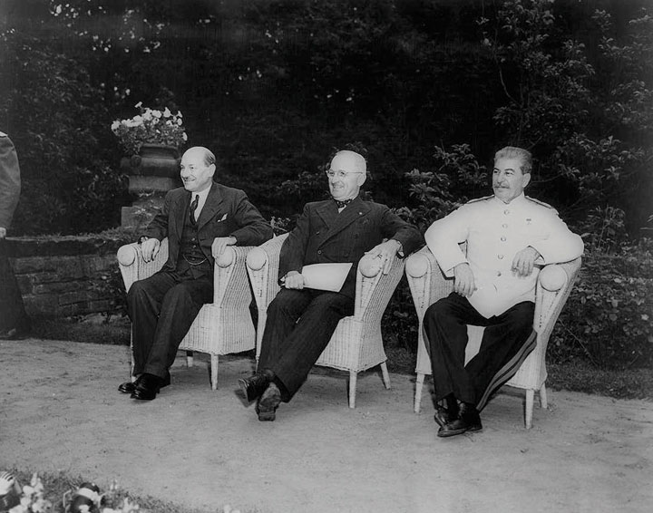
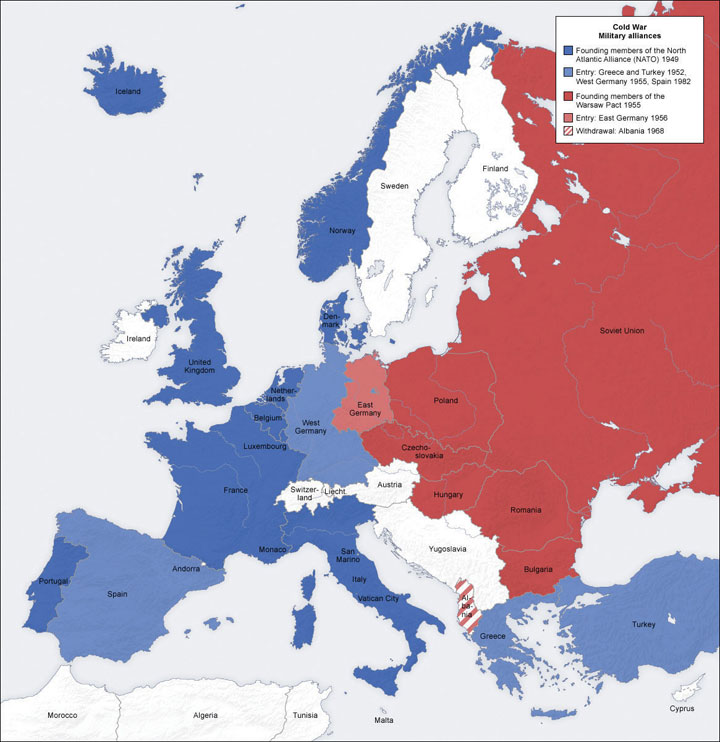
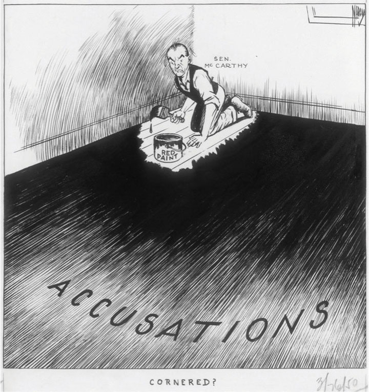
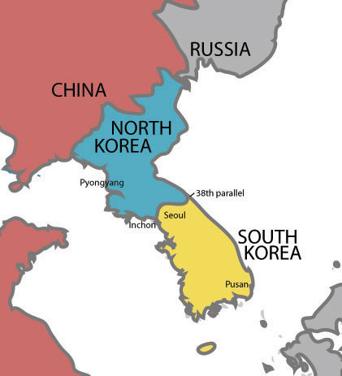
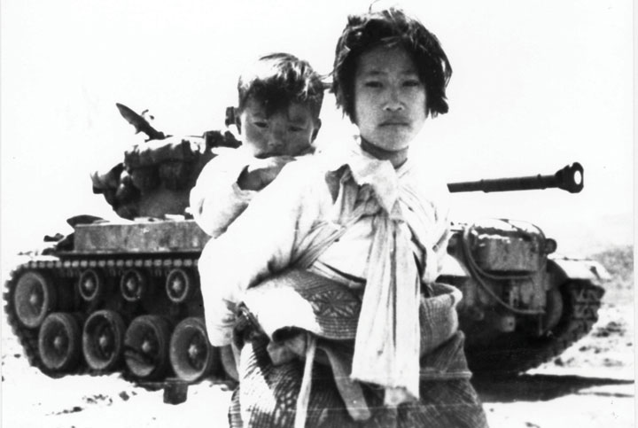
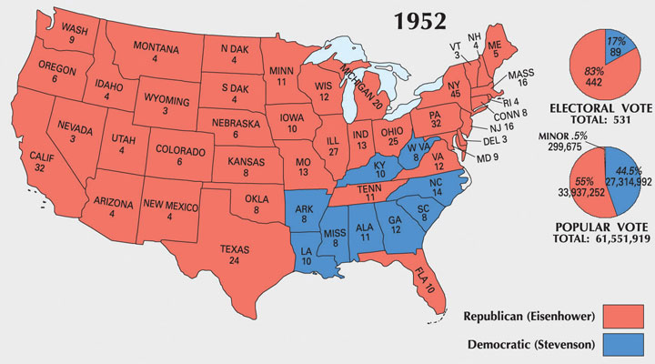

The Cold WarThe persistent tension between the United States and its Western supporters against the Soviet Union and other Communist nations between the end of the Second World War and the dissolution of the Soviet Union in 1991. The Cold War featured political, military, and economic rivalries between the West and the international supporters of Communism that led to dozens of wars, even if the United States and the Soviet Union never directly fought one another. refers to the economic and political rivalry between the United States and the Soviet Union between 1945 and 1991. The conflict was based on the two nations’ competing political and economic systems: the Communist system of the Soviet Union and its allies and the democratic Capitalism of the Unites States and its allies. These years featured intense political and economic rivalry as well as diplomatic and military posturing between the two nations. The period was also host to dramatic increases in military spending, hyperbolic rhetoric by leaders of both sides, high tensions, and millions of casualties in proxy wars throughout Latin America, Africa, and Asia.
Both sides viewed their economic and political system as superior to the other and interpreted nearly every world event as part of an ongoing confrontation that would determine whether Capitalism or Communism would become the prevailing ideology throughout the globe. The Soviets tried to spread the economic and political system of Communism to other nations, while the United States promoted its vision of democracy and free enterprise. This competition led to dozens of small-scale military conflicts and several major wars involving the armed forces of both nations. However, as the term “Cold War” suggests, there was no direct military engagement between the two nations.
The motivation behind Soviet and US attempts to spread their economic and political systems to other nations is heavily debated by historians. What is clear is that both nations came to view the other as aggressive and committed to global domination by the early 1950s. For example, in 1950, officials within the Department of Defense worked with foreign-policy experts to create a report to the National Security Council. This sixty-page document was known by its shortened name, NSC-68A lengthy document issued by the National Security Council in 1950 that demonstrated the belief that the Soviet Union represented a direct threat to the American way of life. The document and its core assumptions influenced US foreign policy throughout the Cold War., and later typified the view of both nations toward the other. NSC-68 explained that the Soviet Union sought “to impose its absolute authority over the rest of the world.” The stakes could not have been higher, the report continued, as Soviets threatened not only “destruction of this Republic but of civilization itself.”
Many Americans had their doubts about the extent to which the Soviet Union and international Communism really posed a threat to their nation. It also appears that many Soviets at least privately expressed doubts about the potential threat Americans represented to their well-being in these early years. However, the victory of Communist forces in China, the outbreak of the Korean War in 1950, and the political climate that emerged within the United States by 1950 created a situation where few political leaders wanted to be seen as soft on Communism. Within the Soviet Union, a similar political environment emerged, and there was even less tolerance for those who doubted the “hard-liners” that dominated the Kremlin. The result was that only five years after their defeat of Hitler, the one-time allies began to evaluate nearly every foreign and domestic-policy decision within the context of a Cold War that seemed increasingly impervious to the ideas and perspectives of those outside of each government’s inner circle.
Recent scholarship based on previously closed Soviet archives tends to challenge Cold War perceptions of the Soviet Union as dominated by an ideology of aggression toward the United States and its allies. Instead, what emerges from recently declassified documents is the image of a nation driven primarily by concerns of its own security and stability. At the same time, these documents confirm the existence of massive human rights violations and contempt for democracy and free discussion within the Soviet Union and throughout its sphere of influence. These documents also demonstrate that many of the leaders and people of Eastern Europe enjoyed a higher level of historical agency in shaping the histories of their nations than was previously assumed. Although it remains clear that the Soviet Union dominated military and foreign-policy decisions in each of these nations, the notion that all decisions and all communication flowed downward from the Kremlin is being revised to account for the agency of the people and leaders of Eastern Europe.
The origins of the Cold War can be seen while America and the Soviet Union were still allies in World War II. The two nations had a history of mutual suspicion, and both maintained very different ideas about how postwar Europe should be administered. Each nation wanted to recreate Europe in their own image by forming Western-style democracies or Soviet-aligned Communist governments. In addition, the Soviets wanted to create a pro-Russian “buffer zone” that would insulate them from potential attacks in the future. These conflicting visions were clearly manifest during the meetings of American, British, and Soviet diplomats at the Yalta and Potsdam Conferences in 1945.
In February 1945, Churchill, Roosevelt, and Stalin met at the Yalta ConferenceFebruary 1945 meeting in the Soviet Union between President Franklin Delano Roosevelt, British Prime Minister Winston Churchill, and Soviet Premier Joseph Stalin. The three leaders discussed wartime strategy, the creation of the United Nations, and the reconstruction of Europe.. Yalta was a popular resort city in the Ukraine where the three leaders discussed the future of Germany and Eastern Europe while their armies continued to close in around Hitler. Stalin believed that the defense of his nation depended on creating a Russian sphere of influence in Poland and other Eastern European nations because Poland and Eastern Europe had been used as a corridor to attack Russia several times in the past two centuries. Stalin promised to create a coalition government made up of representatives of the democratic Polish government exiled in London. Churchill and Roosevelt correctly suspected that he would instead create an interim government led by pro-Soviet Communists.
The allies had reason to be concerned about how democratic this process would be given the actions of the Red Army in Poland the previous year. For example, Stalin halted his offensive against Nazi-occupied Warsaw for two months while the German army killed thousands of Polish fighters who opposed Communism. Even though the Western Allies feared that Stalin would turn Poland into a Communist puppet state, they were hardly in any position to demand otherwise considering the Red Army’s complete occupation of Eastern Europe. Likewise, the Western Allies recognized that Stalin’s army would occupy Eastern Germany. Hoping to keep their tentative alliance alive, Churchill and Roosevelt agreed that each nation would be responsible for occupying and reconstructing the section of Germany and Central Europe that corresponded with the position of their armies.
By the time these nations met again in Allied-controlled Germany for the Potsdam ConferenceJuly 1945 meeting in Germany between new President Harry Truman, new British Prime Minister Clement Attlee, and Soviet Premier Joseph Stalin. The three leaders discussed the reconstruction of Europe and decided to divide Germany and Berlin into American, British, French, and Soviet sectors. in July, Churchill would be replaced by Clement Attlee as prime minister and Truman replaced the deceased Roosevelt. Like their predecessors, Attlee and Truman recognized the futility of a military challenge to Stalin’s position in Eastern Europe. Instead, they focused their efforts on determining how Eastern Europe might be divided and administered by the Soviets in a way that would foster reconstruction and genuine independence. They hoped that the Soviet Army’s presence would be temporary and that new national boundaries might be established throughout Eastern Europe, which might prevent future conflicts.
As had been the case following World War I, those present at the Potsdam Conference attempted to divide Europe into individual nations according to the doctrine of self-determination. Unfortunately, tremendous ethnic and political strife throughout Eastern Europe derailed the process. The dominant peoples of Eastern Europe each sought to remove national and ethnic minorities. In addition, all of these areas were also divided among a host of political factions, each vying for control of regions that had been completely destroyed by war and military occupation. Before long, this economic, ethnic, and political strife spread to Southern Europe in places such as Greece, Italy, and even Western nations such as France.
Figure 9.1
Britain’s Clement Attlee, President Harry Truman, and the Soviet Union’s Joseph Stalin seated together in Germany following the end of World War II.
The postwar settlement was also similar to that of World War I in the way the victorious allies debated the fate of Germany. In addition to dividing Germany into four zones, the German military was disbanded and the National Socialist Party was permanently abolished. The nation’s infrastructure was in shambles following the combined onslaught of Western and Soviet armies, so a special council was created to administer humanitarian aid. Each of the four nations created interim governments in their respective zones and prepared for special elections the world hoped would lead to stable and democratic governance to avoid the previous instability of the post–World War I period.
Given the extreme hardships their country endured, Russian leaders also sought reparations as a method of punishing Germany while building up their military. This led to conflict between the four occupying powers as the West sought to rebuild a democratic Germany that could stand on its own and refused Soviet demands for reparations from their sectors of Germany. Within the Soviet sector of Eastern Germany, the provisional government also worked to reconstruct the German economy, but its military also seized many of the nation’s economic assets as war reparations, which hindered efforts at reconstruction.
While many Americans shared the desire of Russian leaders to punish their attackers, the United States had prospered during the war and its highest priority was to promote global recovery and avoid the economic and political instability that led to the rise of totalitarian governments. Rather than seeking reparations within its German sector, the United States launched a massive program to aid war-torn Germany and later Japan in hopes of promoting stable democratic governments. In both Asia and Europe, the US perspective was influenced by humanitarian concerns but also guided by self-interest. Business leaders hoped to resume trade with these nations while political leaders feared economic instability might lead Europe and Asia toward Communism. As a result, US aid was aimed at ensuring Japanese and German reconstruction in the American image of democracy and free enterprise. US aid to these former adversaries was rewarded by the close political and economic ties that developed as West Germany and Japan became two of the strongest US allies in their ensuing conflict with the Soviet Union.
US forces occupied Japan from 1945 until 1952, overseeing the transition to a democratic government while also seizing military assets, holding military tribunals for accused war criminals, and overseeing reparations payments. Given the horrific nature of the war in the Pacific, the peacetime transition of Japan from a militaristic dictatorship to a prospering democracy was remarkable. As was the case in Germany, the reconstruction of Japan mirrored the developing Cold War rivalry between the Soviet Union and the United States. The Soviets created their sphere of influence in Manchuria while the Americans occupied Japan. With the help of the newly created United Nations, Korea was temporarily partitioned into US and Soviet sectors and installed with rival governments.
General Douglas MacArthurCommander of US forces in the southwest Pacific in World War II, MacArthur was also placed in charge of the Reconstruction of Japan. MacArthur also served as commander of US and UN forces in the Korean War. MacArthur was relieved of duty after making unauthorized remarks calling for an attack against Communist China. was placed in charge of Japan’s reconstruction and created a constitutional democracy similar to the United States. Early years of Japanese reconstruction focused on reducing the power of that nation’s military and converting factories from creating munitions to producing consumer goods. Many Americans feared that promoting too much industrial growth might lead to Japan becoming a major power once again. However, as Communism began to spread throughout China and Southeastern Asia, US leaders shifted their orientation and invested resources to ensure Japanese economic growth under a pro-American government. Many of MacArthur’s democratic reforms such as female suffrage proved unpopular with the Japanese people at first, but by 1950, America and Japan had transformed from bitter enemies to allies. The basis of this friendship was US economic aid, mutual trade, and hostility to the growth of Communism in neighboring China and North Korea.
The reconstruction of Eastern Europe offers a sharp contrast to that of Japan and West Germany. The people of Eastern Europe had suffered tremendously and now demanded that German residents of the region leave their countries. After all, they reasoned, Hitler had justified his actions in the region based on reuniting all peoples of German origins. For this reason, authorities in Eastern Europe demanded that Germans living in Poland, Czechoslovakia, and Hungary return to Germany. The Potsdam Conference followed this line of reasoning in declaring its intention to create nations along ethnic lines. Poland was to be occupied by people of Polish origins, the Czechs were to live in Czechoslovakia, and Hungary would be for Hungarians, and so on.
Figure 9.2
This map demonstrates the division of Europe that corresponded to the positions of the armies of the Soviet Union and the Armies of the Western Allies. The Soviet Union would dominate the reconstruction of Eastern Europe, with the nations of this region forming socialist governments that were allied with Moscow.
As had been the case after World War I, this plan failed to recognize the vast ethnic diversity of the region and the impossibility of drawing national boundaries that would accomplish its goal without creating millions of refugees. In addition, millions of other ethnic minorities would also be forced to leave their homes if such a plan was universally enforced. Each government partially attempted to purge their nation of various minorities, usually enforcing the provisions of exclusionary schemes on those most vulnerable—the poor. Eastern Europe had scarce resources to feed or transport the millions of refugees created by the expulsion of ethnic minorities, and historians estimate that as many as 2 million people perished in refugee camps in the resulting disorder.
In addition to the atrocities resulting from expulsion, the people of Eastern Europe suffered under various totalitarian governments created under the influence of Stalin’s authoritarian régime. Some historians have blamed the “appeasement” of Stalin at the Yalta and Potsdam Conferences for the abandonment of Eastern Europe to Soviet domination. However, the Western Allies were hardly in any position to dictate the reconstruction of Eastern Europe under Soviet terms given the position of the Red Army throughout the region. In addition, the Allies wanted to recreate the area west of Berlin in their own image.
The official declarations at Yalta and Potsdam mandated democratic elections and constitutional government. Indeed, many elections were held and both Communist and non-Communist leaders were democratically elected throughout Eastern Europe in the immediate postwar years. Before long, however, Communist groups throughout the region seized power with Soviet military backing. Shortly after the end of World War II, Hungary, Poland, Romania, Bulgaria, and East Germany all had Communist governments that were backed by the Soviet Red Army.
Yugoslavia liberated itself from Nazi rule, which meant that it was never occupied by the Soviet Army. As a result, Yugoslavian leader Josip TitoLeader of Communist Yugoslavia. Tito was significant in world history because he fiercely defended the independence of his nation, despite the attempts of Stalin to dictate the affairs of all Communist states. was able to maintain independence from the Soviet bloc because the Red Army neither liberated nor occupied Yugoslavia. Tito’s Communist regime jailed dissenters as had other Soviet-backed regimes yet provided an alternative to Soviet leadership for leftists throughout the globe. By 1948, Europe was divided between democratic and Communist states along a line that corresponded to the orientation of the two superpowers whose armies had liberated Europe from the Nazis. Democracy and Capitalism ruled in the Western nations liberated and occupied by US troops, while the eastern nations liberated by the Soviet Red Army formed Communist governments.
Despite the tensions between the United States and the Soviet Union, the postwar period ushered in an era of hope for lasting world peace through better communication and collective action. As the war came to an end, representatives from around the globe met to discuss ways to prevent future conflicts. These diplomats authored a provisional charter for the United NationsAn international organization headquartered in New York City that attempts to mediate global conflicts and disagreements between member nations as a means of promoting worldwide peace, human rights, and economic development and stability., a new organization that would replace the ineffectual League of Nations established after the first World War. “Big Three” leaders Winston Churchill, Franklin Delano Roosevelt, and Joseph Stalin discussed the idea throughout the war and even decided some of the early details about how the organization would be structured. Delegates representing various member nations met in San Francisco in April 1945 and discussed various ideas about the postwar world order as well as the best method of structuring the United Nations to meet these challenges. Although the United States had rejected the terms of membership of the League of Nations after World War I, it took the lead in its support of the United Nations. However, because participation in a collectivist organization such as the United Nations requires commitment to decisions one cannot control and may strongly disagree with, US membership in, and relationship with, the United Nations has always been controversial.
The United Nations charter avowed principles of peace through communication and collective action, autonomy and self-determination for people around the world, and respect for human rights irrespective of race, religion, gender, and ethnicity. The charter also established a governmental structure led by the General Assembly, Security CouncilOne of the major bodies of the United Nations composed of five permanent members and ten rotating members. The council is charged with maintaining global peace and stability and has the power to make binding decisions., and the administrative body of the UN called the Secretariat. Each member nation was permitted one representative and one vote within the General Assembly*. Membership on the Security Council, on the other hand, was restricted to fifteen nations. Ten of these seats are nominated on a rotating basis every two years, with the remaining five seats being permanently granted to the five leading Allied Powers (the United States, Great Britain, the Soviet Union [Russia today], China, and France). Any one of these five permanent members can exercise its veto power, effectively blocking any measure regardless of the votes of the other fourteen members of the Security Council.
Figure 9.3

Eleanor Roosevelt holds a ceremonial copy of the Universal Declaration of Human Rights, which was approved by nearly every member nation in 1948. The apartheid government of South Africa was among the Communist nations that did not approve the document.
The Security Council is required to work with the General Assembly* and the Secretary-General, who serves as a chief administrator and executive over the UN. The Secretary-General oversees the Secretariat—an administrative body composed of thousands of professionals who manage the daily operations of the UN. Among the responsibilities of the Secretariat are the operations of dozens of special agencies such as the United Nations Children’s Fund (UNICEF), the World Health Organization (WHO), and the United Nations Educational, Scientific, and Cultural Organization (UNESCO). With the aid of the Secretariat, the General Assembly* and Security Council negotiate all international conflicts and attempt to promote common understanding and support basic standards of human rights upon which all nations can agree. For example, a measure drafted by a special committee led by Eleanor Roosevelt was presented and approved by the General Assembly* in 1948. Known as the Universal Declaration of Human Rights, this document placed all UN members on record as supporting basic human rights, racial and ethnic equality, freedom of speech, religious toleration, and economic opportunity.
In March 1946, former British Prime Minister Winston Churchill was invited to speak at Westminster College in Fulton, Missouri. Churchill sought to draw US attention to the line dividing Europe between democratic and Communist nations, an “iron curtainA phrase first expressed by Winston Churchill referencing the dividing line between Communist-dominated Eastern Europe and the West. The phrase was used by Western leaders to denote their belief that something menacing or sinister existed on the other side of the ideological divide.” he portrayed as dividing the continent between freedom and totalitarianism. While most Americans did not yet view Europe or the rest of the world in such unequivocal terms, recent events were pushing many toward Churchill’s perspective.
In February 1946, Stalin claimed that there could be no long-term peace between Communism and Capitalism and pledged that his Soviet Union would create and maintain the world’s most dominant military. In this same month, US adviser George KennanA Princeton-trained historian who advised Truman regarding Soviet affairs. He viewed the Soviet Union as an aggressor state that sought to expand its doctrines and influence at the expense of US security and prosperity. His ideas helped to frame the American policy of containment. sent his “Long Telegram” from Moscow with a dire warning based on his interpretation of the Soviet worldview. Kennan recognized that Stalin’s rhetoric about the perpetual war between Communism and Capitalism did not mean that the Soviets actually desired armed confrontation with Capitalist nations. Instead, he explained that the Soviets desired to promote and expand Communism throughout the world.
Kennan’s advice to Truman was to respond by promoting Capitalism and democracy while maintaining a policy of containmentA strategy to minimize the threat that US policymakers believed Communism and the Soviet Union represented to US interests by preventing the spread of Communism and Soviet influence throughout the globe. regarding Communism. Truman agreed that Communism must not spread from those nations that were already in Stalin’s sphere of influence to the rest of the world. In other words, the Truman administration recognized that the United States could do little to affect the outcome in Eastern Europe given the postwar agreements between the two nations. Instead, they believed the nation should direct efforts throughout the rest of the world to make sure Communism did not spread beyond the “iron curtain” of which Churchill had spoken. With Europe divided between East and West, the two superpowers soon began a competition to win influence throughout the globe. For both sides, the development of a powerful military was a key element of political and diplomatic influence.
Economic aid was also a key ingredient of the Cold War contest between Western and Soviet influence. European and Asian nations experienced tremendous economic instability in the wake of World War II. Unemployment and inflation were extremely high, and millions were suffering from food shortages. US leaders feared that Communist supporters throughout Europe would capitalize on the instability and fear of the immediate postwar period to spread their ideas. Although US leaders believed that Capitalism was a superior economic system, they recognized that Soviet rhetoric about sharing farmland equally would appeal to landless peasants who worked the land of the wealthy. At the same time, the concept of cooperative ownership of factories would attract supporters among the impoverished workers in the cities. Americans could reflect on their own history to see how Socialism attracted supporters in times of economic crisis. These concerns about the spread of collectivist theories escalated throughout 1946 as Socialist and Communist parties started to garner significant support in nations such as Czechoslovakia, Italy, Finland, and even France. As a result, the United States announced that it would step up its efforts to provide economic aid to these nations as a means of jump-starting a return to Capitalist prosperity. At the same time, the United States also declared that it would keep troops in Europe as a peacekeeping force.
Two nations that were especially important to US policymakers were Greece and Turkey where Communist forces were fighting civil wars for control of their nations. The British traditionally considered this region of the Mediterranean as their sphere of influence, but their own economic struggles forced them to reconsider the costs of this worldview. President Truman wanted to take Britain’s place in the region by providing military aid to the monarchies of Greece and Turkey, but he recognized that his own nation’s history of isolationism and hostility to monarchy stood in the way. As a result, he addressed the American people in March 1947 in a successful attempt to convince a skeptical nation that the United States must intercede against Communist forces in the Mediterranean. “It must be the policy of the United States,” Truman exclaimed, “to support free peoples who are resisting attempted subjugation by armed minorities or outside pressures.” This expression of US intervention against any expansion of Communism was to become the central aspect of the Truman DoctrineInfluenced by the rise of significant Communist parties in Greece and Turkey, Truman announced in the spring of 1947 that the United States would support “free peoples who are resisting attempted subjugation by armed minorities or by outside pressures.” In practice, the Truman Doctrine suggested that the United States intervene to prevent the spread of Communism.. The president’s ability to phrase Cold War containment in terms of protecting freedom resonated deeply with the American people and placed those who opposed his policies on the defensive.
The popular acceptance of the Truman Doctrine and the concern that Communist victories in Greece and Turkey would lead to the expansion of Communism in Europe and the Middle East led to congressional appropriations of $400 million in military aid to the right-wing monarchies of Greece and Turkey. These funds were key to the defeat of Communist forces in both nations. In addition, Congress created the National Security Council and the Central Intelligence Agency (CIA) to gather information about potential threats to the nation. Before long, the CIA was empowered to conduct secret military operations based on this information. In retrospect, it is clear that Truman’s advisers exaggerated the extent of Soviet-backing these forces received. It is also apparent that US action in the Mediterranean set the precedent of supplying military aid to any government—democratic or otherwise—that was fighting the spread of Communism. For the next three decades, the containment of Communism was the highest priority and guiding spirit of US foreign policy.
The Soviet Union had a similar perspective regarding foreign policy, although the Soviets hoped to contain the influence of the West throughout the globe. This was especially true regarding Eastern Europe. Russia had endured exponentially more damage and casualties than the United States, Britain, and France combined. Most of its leading cities were destroyed. In addition, the Soviet Union believed that the instability of Eastern Europe threatened its own internal security. As a result, the Soviet Union hoped to reconstruct Eastern Europe in its own image, creating numerous Soviet-controlled Communist nations between the Capitalist nations of Western Europe and its own border.
Stalin ordered his military and political leaders to back the communist parties of Poland, Czechoslovakia, Hungary, and Romania. The result was that each of these nations formed communist governments. These nations had each been devastated by the war, so many of the people of these nations were hopeful that an alliance with a powerful nation like the Soviet Union would provide stability and future economic growth. However, the Soviet Union was hardly in position to offer much assistance following the war, and Stalin ordered the seizure of some of the nations’ resources to finance the operations of the Red Army.
The US economic experience during the war was nearly the opposite of Europe, Asia, and the Soviet Union, as no American city had been attacked. (A few of the Alaskan islands were occupied by the Japanese, while the attack on Hawaii triggered the war. Alaska and Hawaii were territories rather than US states at this time, but what is more important is the fact that the civilian populations of these territories were not the target of the attacks, which is in sharp contrast to the experiences of Europe and Asia). The US economy had experienced unprecedented growth. As a result, those nations who were not occupied by Soviet troops turned toward the United States for assistance. By 1947, nations throughout the world recognized that the United States was committed to fighting the expansion of Communism and was willing to provide economic assistance to any nation that shared its political orientation. Yet even with the billions of dollars of US aid that had already been committed, most of Europe and Asia remained mired in economic depression. Communist political parties were continuing to gain new supporters among the impoverished and unemployed. Communist leaders pointed out the vast differences of wealth between the rich and poor in each nation and assured all who would listen that their doctrine of equal distribution of wealth and government ownership of factories would eradicate poverty and provide full employment. In response, the United States implemented the Marshall PlanA program of US financial aid aimed at promoting the reconstruction of Europe. The plan was motivated by a desire to prevent the economic disorder that often facilitated the growth of Communist parties as well as restoring global trade..
Figure 9.4

American political cartoonist Herb Block critically compares the state of the Soviet-dominated nations of Eastern Europe with the aid provided to non-Socialist nations under the terms of the Marshall Plan.
The brainchild of the immensely popular George C. Marshall, who was the army’s chief of staff during World War II and now served as Truman’s secretary of state, the Marshall Plan provided over $12 billion in economic aid to participating nations. The goal was to demonstrate convincingly that America’s generosity and prosperity as a Capitalistic democracy could restore European progress better than “hollow” Communist theory and rhetoric. Advocates of the Marshall Plan were equally prone to long-windedness about the supremacy of their economic and political system, but the plan’s sudden influx of US currency backed up this rhetoric and immediately restored economic stability. Billions of dollars flowed from the United States to the banks and governments of various European nations to reverse inflation, revive European manufacturing, and provide emergency food and supplies to the desperate population. The United States also provided military aid to nationalist forces battling the Communists in Greece and Italy, even though US leaders had serious reservations about the long-term desirability of propping up the leaders of these forces.
Most US officials downplayed America’s support of any regime battling Communism, regardless of whether that regime had the support of the people or subscribed to US democratic ideals. Marshall’s own rhetoric tended to emphasize the humanitarian intent of the aid in a way that was often divorced from politics altogether. “Our policy is directed not against any country or doctrine,” Marshall exclaimed, “but against hunger, poverty, desperation, and chaos.” Each of these conditions existed in the Communist nations of Europe and was especially rampant in the war-torn regions of the Soviet Union. As a result, the Soviet Union was among the sixteen nations that met with US diplomats in Paris in July 1947 to determine what form the US aid would take.
Soviet Foreign Minister Vyacheslov Molotov recognized that the US offer, which had been extended to all European nations, was not intended to include governments such as the Soviet Union that remained committed to Communism. Many historians believe Molotov’s attendance was a well-calculated ploy to expose the limits of the Marshall Plan’s humanitarian intentions. However, Stalin quickly ordered Molotov to return to Russia, thereby allowing the United States to maintain that they were not motivated by politics while only contributing to non-Communist nations.
The remaining participants requested $29 billion in aid, which Truman quickly reduced to $17 billion before requesting the money from Congress. Although the United States had already distributed over $10 billion in aid in the last few years, the Marshall Plan alarmed many Americans, who deeply opposed such large amounts of foreign aid. Many in Congress agreed, pointing out that the United States had already provided billions in aid both before and after the war. Some members of Congress visited Europe and told heart-breaking stories of widespread starvation. Others mixed this humanitarian impulse with a message of self-interest as they predicted that the United States would be the leading beneficiary of Marshall Plan aid because the money would create stable democracies that would be reliable anti-Communist allies. In addition, US business interests recognized that European recovery would lead to new markets for their products.
Ironically, Stalin provided the strongest argument in favor of the Marshall Plan. Soviet officials engineered a farcical election in Hungary in August 1947 that resulted in a Communist landslide. Even more alarming, Stalin ordered Soviet forces to invade Czechoslovakia in February 1948. The takeover of pro-Soviet forces in both nations ended the debate in Congress and convinced most of the opponents of the Marshall Plan that Communism would spread throughout Europe unless the United States took proactive measures to repair the European economy.
Figure 9.5

Germany was divided into four different sectors. Each sector was assigned to either Britain, France, the United States, or the Soviet Union. Berlin was also divided into four sectors but was in the Soviet sector in the east.
Most historians agree that distributing aid through the Marshall Plan was essential to preventing suffering and the spread of Communism. Together with the efforts of the European people themselves, US aid provided the temporary assistance needed to prevent destitution and the long-term capital investment required for industrial recovery. By the early 1950s, Western Europe was again prospering and Communist parties had lost most of their supporters. The success of the Marshall Plan was most obvious in Germany, which had been divided into American, French, British, and German sectors.
Berlin was located in the Soviet sector in eastern Germany but was also divided into four sectors. While the sectors of Berlin and the part of Germany under Western control were starting to recover by 1948, conditions improved little in the Soviet-controlled eastern sectors. The US, British, and French sectors of Germany moved toward a single currency in preparation for uniting these sections as an independent nation. The plan alarmed Stalin, who responded by ordering a blockade of all land and water routes to Berlin in June 1948. This meant that nothing would be allowed to enter the US sector of Berlin from the west, even much-needed humanitarian aid. Stalin gambled that the Western nations would be unable to provide for the 2 million residents in their sectors of Berlin and would have to abandon their control of the city.
Some of Truman’s advisers recommended sending an armored column of tanks and soldiers against the Soviet blockade to demonstrate US commitment to the city of Berlin. Instead, Truman demonstrated America’s ingenuity and immense material resources by simply flying all supplies into the city. US planes landed every three minutes during the ensuing Berlin AirliftA massive US Air Force mission between June 1948 and May 1949 that provided the Western sector of Berlin with vital supplies via cargo planes. The airlift was necessitated by Stalin’s decision to cut off all land routes to the city., with more than 1,000 daily flights carrying 2,500 tons of fuel and supplies to the isolated residents of Western Berlin for nearly an entire year. America’s ability to simply fly over the Soviet blockade to provide humanitarian aid made Stalin appear both malicious and feeble. Likewise, the incredible logistical success and generosity of the Berlin Airlift provided the world with a contrasting vision of the two superpowers. After it became clear that the Americans could maintain the airlift indefinitely, Stalin lifted the blockade in May 1949. That same month, the Western powers united their three sections and created the Federal Republic of Germany (West Germany) as a constitutional democracy. Five months later, a provisional Communist government was established in the Soviet sector; this section would be known in the United States as East Germany, although its official name was the German Democratic Republic.
With the creation of East Germany, Europe was almost completely divided between Soviet-backed Communist nations in the Eastern- and Western-aligned nations of the Mediterranean and Western Europe. The United States was still reveling in its symbolic victory over the Soviet Union in the Berlin Airlift when the news of Russia’s successful test of an atomic bomb reached the states in August 1949. Months later, China established a Communist government. The United States responded to these events by continuing to provide economic aid to non-Communist states, increasing military spending, and forming the North Atlantic Treaty Organization (NATO)A military alliance originally formed in 1949 between the United States and other nations in North America and Europe in response to the perceived aggression of Communist nations. Today, NATO has expanded to twenty-eight members.. NATO was a defensive alliance in which the United States, Canada, and the original ten Western European nations that joined in 1949 promised to join forces against any nation that attacked a NATO member. NATO represented the first peacetime military alliance in US history, yet was overwhelmingly supported by the Senate, which ratified the NATO treaty with an 82–13 vote. By 1951, US troops were assigned to NATO forces in Europe. While the numbers of troops were relatively small, the US role as the leader of NATO symbolized the end of American isolationism and prompted a similar response from the Soviet Union. In May 1955, Russia responded by calling a meeting in Poland, where it would create a similar alliance for the Communist nations of Eastern Europe. Josip Tito declined to join the Soviet-dominated Warsaw PactA military alliance between the Soviet Union and the Communist nations of Eastern Europe between 1955 and the dissolution of the Soviet Union in 1991., leading many US leaders to consider the possibility of forming some type of mutual agreement with the nonaligned Communist leader. However, Yugoslavia’s primary role in the emerging Cold War was to demonstrate the possibility of remaining independent of both the American and Soviet orbit.
The Soviet Union also attempted to create their own version of the Marshall Plan to aid the economies of the Communist Eastern bloc nations. The Council for Mutual Economic Assistance (COMECON) provided some aid to its member nations despite the relative weakness of the Soviet economy, which was saddled with disproportionately large expenditures in military and space programs. The Cold War intensified in Asia in 1949 as Stalin held meetings with Chinese Communist leader Mao ZedongCommunist revolutionary who defeated the nationalist forces of Chiang Kai-shek in 1949 to become the leader of the People’s Republic of China.. Mao’s Communist rebels defeated the US-backed nationalist forces of China. The Soviet Union’s alliance with the new People’s Republic of China seemed to prove the wisdom of the Truman Doctrine. US political leaders and pundits alike spoke of containment in terms of a “domino theory” in which one nation “falling” to Communism appeared to endanger their neighbors. Others spoke of Communism as a contagious disease whose victims must be quarantined to prevent the spread to “healthy” nations.
Truman and his advisers rarely considered China on its own terms, choosing instead to view events in Asia in the context of Europe and the Cold War. The same is true of the American media in the 1940s. As a result, most Americans assumed that the actions of Asian leaders were the product of American and European foreign policies. As a result, Truman came under heavy scrutiny for the “loss” of China to Communism. The criticism discounts the agency of people in China who supported Communist leaders over the alternative, but few in the United States considered events from this point of view. Instead, the perception spread that the Truman administration allowed the Communists to take power in China and the president became increasingly vulnerable to accusations that his administration was “soft” on Communism. Dozens of Republican politicians seized this perception and swept to office in the 1950 and 1952 Congressional elections. Under Truman’s watch, the United States had squandered its atomic monopoly, they argued, while watching idly by as their democratic ally in China was defeated by Communist forces.
In reality, the nationalist forces Mao had defeated represented an extremely undemocratic and unpopular dictatorship. There was likely very little America could have done to prevent the defeat of Chiang Kai-shek, the corrupt leader of nationalist forces who was exiled to Taiwan in 1950. However, the perception that Truman was “soft” on Communism soon drove the president to respond in ways that assumed US foreign policy could determine events abroad. Truman responded to the “loss” of China and the increased political pressure by escalating and expanding his containment policy from Europe and Asia to Africa, Latin America, and the Middle East. The United States also formalized an alliance with Japan, Thailand, the Philippines, and Australia that provided these nations with US aid in return for military bases throughout the Pacific. In 1950, Truman also committed US forces to a war in Korea and began providing economic and military aid to French forces fighting in Vietnam.
The British had pledged support for a Jewish homeland during World War I under the Balfour Declaration, and similar promises regarding a Jewish homeland were made during World War II. However, neither Jewish Zionists (advocates of an independent Jewish state in Palestine) nor the region’s Arabic inhabitants had been granted control of Palestine. Tensions rose between Jews and Arabs in the region as Britain sought a plan that would be acceptable to all parties while promoting stability in the region. Arabs were especially concerned by the arrival of Jewish settlers in the early 1930s. Many of these settlers had succeeded in escaping Nazi persecution prior to Britain’s ban against Jewish immigration from Europe to Palestine. In 1939, the British again tried to negotiate an agreement between Zionists and Palestinians regarding shared use of the region. However, even the diplomats selected to represent Zionist and Palestinian perspectives refused to acknowledge the existence of the other.
The horrors of the Holocaust and British guilt for blocking the escape of European Jews to Palestine led to renewed support for a Jewish homeland in Europe. Great Britain still controlled Palestine but sought to avoid any settlement that might anger either side. As a result, Britain announced they would follow the advice of the United Nations. In 1947, the UN voted to partition Palestine into separate Jewish and Arab states, with Jerusalem becoming the capital of both nations. The plan appeared reasonable to outsiders, but neither side considered the issue settled. Part of the problem was that there was no way to create an all-Jewish or all-Palestinian nation without forcing tens of thousands of people from their homes.
Figure 9.6

Israel was created as a new nation in 1947 with the intention of setting aside certain areas for Palestinians. The new nation was surrounded by Arabic countries that sought to challenge its existence, leading to a series of wars and territory disputes. Conflicts involving the Palestinian Territories known as the Gaza Strip and West Bank were especially turbulent.
Standard Oil and other US companies were increasingly competing with the British and Dutch for access to Middle Eastern oil. The outbreak of World War II and the expanding commitments of the military increased the importance of the region to the US government, while US oil companies recognized the need to expand production. The US and British governments had promised to consult with Arabic leaders prior to making or supporting any major policy affecting the Middle East. Both Roosevelt and his successor Truman fully understood the importance of Palestine for both Jews and Arabs. Like the British leaders, the US leaders were wary of any action that might promote instability in the region. However, Truman and other US leaders were also deeply influenced by the Holocaust. They knew that the death toll was exacerbated by British and American refusal to allow Jewish refugees into their nations. Likewise, Truman viewed Britain’s refusal to allow Jewish refugees into Palestine as indefensible. After all, Britain had declared that Palestine would become a Jewish homeland under the Balfour Declaration.
The situation grew tense as nearly a quarter-million Jewish refugees, many of whom were Holocaust survivors, were living in camps throughout Europe waiting for permission to immigrate to Palestine or other locations. Truman sought to eliminate the restrictions that had prevented Jews from coming to the United States during Hitler’s reign. Even after Americans were made aware of the full dimension of the Holocaust, Truman’s proposition met significant opposition. Many Americans hoped that the existence of a Jewish nation in Palestine would settle the issue and there would be no need to alter US immigration policies. Others feared that backlash of the Palestinian majority would lead to instability in the region and jeopardize the business relations between US oil companies and the Arab world.
While many viewed their nation’s support for Israel as atonement for US inaction regarding the Holocaust, the leading reason for US and international support for the creation of an independent Jewish state may have been the continued reluctance of all nations to accept large numbers of Jewish refugees into their own countries. Although most commended the action as a way of preventing future atrocities against Jews around the globe, some historians believe that US support of Israel was largely influenced by the fact that its creation helped to discourage Jewish migration to the United States.
The United States was the first to extend diplomatic recognition to Israel when it became an independent nation in May 1948. However, Israel was also surrounded by hostile states that pledged to attack it as soon as British troops left. As predicted, once the British mandate had expired and its troops returned to the island, Israel was immediately invaded by several neighboring Arab countries. The attackers failed to effectively combine their forces, and Israel not only defeated these forces but also expanded its territory. The Israeli victory and its resulting territorial gains resulted in 750,000 Arab refugees fleeing from these lands and an ongoing controversy regarding the status of these lands. Although the priority of US policymakers in the Middle East following World War II remained focused on oil exploration and containment of Communism, America would increasingly view Israeli-Palestinian relations as a leading issue of concern.
Tens of thousands of American Jews also migrated to Palestine following its creation in 1948. These were not the only Americans who traveled to the Middle East during this era, as dozens of American and British enclaves were created as oil companies expanded throughout the region. Kirkuk, Iraq; Abadan, Iran; and Dhahran, Saudi Arabia, and other centers of oil exploration became home to tens of thousands of Americans. In the case of Dhahran, a virtual American suburb was constructed to house the nearly 5,000 Americans employed by the Arabian American Oil Company (ARAMCO). The company was formed from an agreement between Standard Oil and a regional Arabian leader named Ibn Saud. The partnership resulted in record profits for the US investors, access to Middle Eastern oil for the US Navy, and the wealth needed for Saud to take over the Arabian Peninsula and create the nation of Saudi Arabia.
The US camp at Dhahran was literally a city within a city, as the Arabic workers were not allowed in the walled American compound, which featured air-conditioned shopping centers and modern hospital facilities. While the Americans lived in relative luxury, the Arabic workers lived in makeshift shanties and were paid less than a dollar per day. The wealth of the oil industry did little to improve the conditions for the majority of King Saud’s subjects. The monarch used his share of oil revenues to consolidate both religious and secular authority, replacing a variety of more liberal Islamic sects that had existed throughout Arabia. Saud believed in the literal interpretation of the Koran and instituted Sharia law. Despite the fact that his views were considered by Westerners as violations of human rights and especially the rights of women, US business and political leaders embraced the Saudi leadership.
In neighboring Iran, Muhammad Reza Shah PahlaviA secular Muslim and pro-Western leader of Iran between 1941 and the Iranian Revolution of 1979. He was temporarily expelled from Iran in 1953 but was placed back in power by a coup supported by the CIA and the British Secret Intelligence Service. (known to Americans as the shah of Iran, with the word “shah” being a word synonymous with “ruler” in that region of the world) had been placed in power by Soviet and British forces that invaded the oil-rich nation in 1941. The shah’s policies that were friendly to foreign oil interests were challenged by his prime minister, Muhammad Mossadeq. Mossadeq introduced a number of progressive reforms such as public housing and social security. He had hoped to pay for these programs through the nationalizationOccurs when a government takes control of economic assets such as land or an entire industry. Although previously under private ownership, the entity in question becomes publicly owned. This may occur with or without financial compensation for the original owner. of Iran’s oil fields. This greatly concerned both US and British business interests who used both political intrigue and a joint CIA and MI-6 operation to overthrow Mossadeq and reinstall the shah of Iran.
After being placed back in power with the aid of the West, the shah of Iran maintained strong ties to the United States and governed the country in ways favorable to Western oil companies. The shah received a share of the profits from the oil industry and US economic and military aid in exchange for his political support. From the US and British perspective, the shah promoted a stable business environment in a historically volatile region of the world. However, many of the Iranian people resented the way the shah squandered the nation’s oil revenues. They strongly resented Western influence and believed that oil revenue should be more equally distributed among the people of their nation. As a result, the shah frequently resorted to the use of his army and secret police to silence dissenters. He would remain in power until 1979 when the popular albeit fiercely anti-American Islamic religious leader Ayatollah Khomeini seized power.
Of all the leading participants in World War II, only the United States prospered economically during the conflict. Throughout Europe and Asia, Axis and Allied nations alike were physically devastated and now faced financial catastrophe. Formerly mired in the most severe depression in its history, the United States emerged from the war with full employment, new technologies, dominance in banking and international trade, and the strongest military, and it was the only nation possessing the atomic bomb. While Europe and Asia faced reconstruction, the United States could concentrate its efforts on more construction. Within a decade, the majority of Americans owned their own homes, and over half of the world’s manufactured goods were made in the United States. The American dollar replaced the British pound sterling as the world’s standard currency, and US companies spread nearly as quickly across the globe as greenbacks. As Americans enjoyed this affluence, they also faced a number of domestic challenges, including the demobilization of the armed services, the question of women’s role in the postwar economy, and whether New Deal programs and wartime economic controls should continue in an era of peace and material prosperity.
Although the United States established worldwide military bases under the terms of the Lend-Lease Act, the nation rapidly scaled down the size of its forces following Japan’s surrender. From a wartime high of 12 million men and women, the military shrank to 1 million soldiers by the end of 1947. The United States granted Filipino independence in 1946 and maintained numerous bases on its commonwealth, the euphemism Americans used in place of the word “colony” when referring to the Philippine islands. By 1950, the military had been reduced to 600,000 personnel. The rapid demobilization led military officials to cancel orders for manufactured goods, which caused great concern among workers and factory owners. America’s wartime economy was largely based on defense spending, and demobilization also meant that most of the 12 million Americans serving in the armed forces would quickly return to civilian life. With the government cancelling its orders, what would become of the millions of veterans as they searched for civilian employment?
Economists estimated that the sudden influx of these men and women into the labor force combined with the end of wartime production would lead to unemployment rates similar to the latter years of the Great Depression. Other economists believed that these ominous forecasts underestimated personal savings and the immense pent-up demand for consumer products. They pointed out that US families had worked longer hours for higher wages and saved a higher percentage of their pay than at any time in history.
The demands of wartime production meant that US factories had produced tanks instead of automobiles and machine guns instead of sewing machines. As a result, millions of Americans had put their money in savings bonds and savings accounts in eager anticipation of the day they could purchase all of the items they dreamed about during the lean years of the Great Depression and the demanding years of the war. These more optimistic predictions proved correct as the United States enjoyed a postwar boom that rivaled the economic growth of the war years. Unemployment remained negligible as construction companies went back to work building homes, and US factories churned out a wide array of consumer goods for an eager public with cash to spend.
One of the reasons why unemployment did not spike was the Serviceman’s Readjustment Act of 1944, popularly known as the Montgomery GI BillA postwar program providing money for veterans so they could attend college or a trade school. The GI Bill also provided certain limited unemployment benefits and a loan program to help veterans purchase a home.. Veterans groups such as the American Legion lobbied Congress for its passage using a mix of moral suasion and economic self-interest. After World War I, they reminded Congress, veterans received little more than a final paycheck and a boat ride home. The result was a catastrophic shock to the labor market as millions of veterans sought jobs at the same moment the War Department stopped purchasing factory products. To prevent another Bonus March and perhaps the unemployment that caused it, the American Legion called on Congress to ease the shock on the labor market by providing returning veterans with college or vocational training. The GI Bill also provided modest unemployment pay of $20 per week for up to one year.
More than 6 million veterans took advantage of the GI Bill’s educational benefits, which covered tuition and books at most colleges and technical schools as well as a modest living allowance. The law revolutionized the US university system as schools rushed to accommodate veterans and the revenue they brought with them. The majority of these veterans would have likely never had the opportunity to attend college because they were not the children of wealthy and upper-middle-class families. Many of the veterans were not children at all, and the GI Bill inspired many colleges to build their first housing for married students. Veterans programs also reversed the trend toward female dominance in higher education as women represented only 3 percent of GI Bill recipients. Many colleges that had slight female majorities returned to Victorian-era gender ratios as thousands of veterans took up residence in army surplus tents on campus quads and eagerly awaited new dorms and their turn for a date with an overwhelmed coed.
Figure 9.7

Three members of different service branches pose in front of Kent State University in Ohio. These men were among 6 million veterans who took advantage of the GI Bill’s educational benefits after World War II.
While over half of those receiving educational benefits attended technical schools, the number attending college was equally vast. In 1947, roughly half of all new college students were veterans, and schools such as the University of Michigan tripled in size from 10,000 to 30,000 students. Most of these veterans hoped that their degrees would make them more competitive on the job market, which led colleges to reconsider their traditional liberal arts focus in favor of career-oriented programs and degrees. Many of the established leaders in academia feared that these changes would lead to a gradual abandonment of their mission to produce well-rounded graduates with strong analytical and communication skills.
A handful of critics even feared that the influx of nonwealthy students might lead to a reduction in academic rigor. Admission standards were not the only concern, as colleges rushed to hire new professors to meet the demand. Colleges in the California state system, for example, had to nearly double the number of instructors from 8,000 to 13,000 in 1946 alone. However, concerns about “dumbing down the curriculum” proved largely groundless as GIs performed so well in the classroom that traditional students referred to them as DARs—an acronym for “Damned Average Raisers.” Most university personnel welcomed the opportunity to serve veterans and viewed the GI Bill as a means by which a college education might become more accessible to those from less-affluent backgrounds. Perhaps most significantly, the GI Bill led to a dramatic increase in the education level of the US workforce, resulting in higher levels of productivity.
More than 2 million veterans also took advantage of the GI Bill’s home-loan program. In combination with other federal home-loan guaranty programs, millions of American families went from being urban renters to suburban homeowners in the postwar period. The GI Bill made no distinctions of race or ethnicity, but the climate of the 1940s meant that nonwhite veterans found it difficult to use the program to find a home. The same practices of redlining and restrictive covenants that prevented black, Latino, Asian, and Jewish homeowners from obtaining loans under the terms of New Deal programs also limited the ability of many veterans to use their GI Bill benefits to purchase a home.
In large cities, black realtors and black mortgage companies met the needs of black veterans, but even these businesses were unable to help veterans purchase homes beyond the handful of vacancies in ever-congested black neighborhoods. Members of other ethnic groups faced similar challenges in finding housing as Asian and Latino residents were frequently unable to find homes in “white” neighborhoods at any price. As a result, ethnic neighborhoods, barrios, and black communities expanded in the postwar period, while newer suburban communities became exclusively white. Neighborhood segregation emerged from individual choices, yet the process was anything but organic. Residential developers throughout the country mandated racial exclusion and then used the “whiteness” of their new suburban communities as a selling point to attract white homebuyers.
Figure 9.8

Many predicted that Truman would lose the election of 1948 to the popular reformer Thomas Dewey. The Chicago Tribune even projected Dewey as the victor after the election, although an actual count of the votes showed a different outcome. The early headline was famously lampooned by Truman himself.
Republicans attacked President Truman during the congressional elections of 1946 with slogans such as “To err is Truman.” That these tactics helped win control of the House and Senate reflected the frustrations of voters who believed the new president was either too similar to FDR or had strayed too far from the principles of the New Deal. In the next two years, Truman attempted to demonstrate that he was a genuine heir of FDR by sponsoring bills that would have raised the minimum wage, provided health care to the elderly, extended social security to more Americans, and increased funding for job creation and education programs. However the increasingly conservative Congress rejected each of these bills.
Truman responded in the presidential election of 1948 by using a strategy similar to what the Republicans had used against him. Truman sought to mobilize frustrated voters and asked the nation if they desired a change from the “do nothing” politicians in Washington and highlighting many of the New Deal-like programs he had supported but they had blocked. This strategy of appealing to the frustration of voters worked for the Republicans in 1946, and it also worked for Truman in 1948. However, these negative campaign tactics also left the victorious parties saddled with the burden of higher expectations from an increasingly discouraged electorate.
The situation appeared bleak for Truman in the months leading up to the 1948 election. Two blocks of voters bolted from his Democratic Party, one because they felt the president was too conservative in his domestic policies, and the other because they felt Truman was too liberal regarding civil rights. In 1946, Truman had fired Secretary of Commerce Henry Wallace, a popular leader within the left wing of the Democratic Party. At that time, Wallace openly challenged the president’s views about the Soviet Union and the necessity of the emerging Cold War. Wallace’s removal hurt Truman’s reputation with liberals in the following years.
When Henry Wallace accepted the candidacy of the new Progressive PartyComposed of Democrats who believed that Harry Truman was too conservative in both foreign and domestic politics, the Progressive Party emerged in 1948 under the banner of presidential candidate Henry Wallace. The Party called for an end to segregation, equal rights for African Americans, an end to the Cold War, and universal health insurance., many predicted that millions of more liberal Democrats would abandon Truman in favor of Wallace. However, most Democrats recognized that Wallace had little chance of winning the presidency in 1948 and feared voting for Wallace’s Progressive Party would do nothing but ensure a Republican victory. Perhaps more importantly, Wallace’s unambiguous support for racial equality, universal health insurance, and peaceful coexistence with the Soviet Union made it difficult for Republicans to paint Truman as a liberal. The president only mildly supported civil rights and was an ardent cold warrior, qualities that made him appear a safer choice with many moderates. Truman responded by waging an aggressive campaign aimed at appealing to voters who had supported the New Deal coalition of his predecessor and still equated Republican candidates with the interests of bankers and corporations.
Figure 9.9

The election of 1948 was closely contested between Harry Truman and Thomas Dewey. South Carolina’s Strom Thurmond ran on a prosegregation ticket under the banner of the States’ Rights Democratic Party, better known as the Dixiecrats.
The second group of voters that abandoned Truman was the States Rights Democratic Party, also known as the DixiecratsComposed of Southern Democrats and others who believed that Harry Truman was too liberal in terms of race, the Dixiecrats seceded from the national Democratic party in 1948 under the banner of Strom Thurmond, a South Carolinian who favored the continuation of racial segregation.. Northern delegates approved a moderate statement in support of civil rights reform during the 1948 Democratic National Convention. In an episode reminiscent of the splintering of the Democratic Party prior to the Civil War, thirty-five Southern delegates led by South Carolina’s Strom ThurmondA senator representing South Carolina for fifty years, Thurmond is most remembered outside of his native South Carolina for his leadership of the Dixiecrat Party in 1948. Thurmond ran for president on a platform calling for the maintenance of racial segregation, a cause he would support until the later years of his life. Thurmond was a Democrat who switched to the Republican Party in 1964 in response to the Democrat’s support of the 1964 Civil Rights Act. protested and walked out of the meeting under the banner of “state’s rights.” The Dixiecrats feared that the federal government had become too powerful and was imposing a liberal agenda upon the nation, which would lead to racial integration. Dixiecrat politicians also spoke to the frustration many hardworking Southern whites felt on issues beyond race. The Dixiecrats swept four Southern states in the election—mostly because Dixiecrat candidate Strom Thurmond was declared the official Democratic candidate in Louisiana, Mississippi, Alabama, and his home state of South Carolina. The intense popularity of Thurmond among Southern whites demonstrated to many conservatives that a platform built on homespun rhetoric, opposition to racial integration, and suspicion of Northern liberals polled well with many voters. As Truman and other Democrats displayed support for moderate civil rights reforms, conservative white Republicans and Democrats alike appealed to populist suspicion of liberal elites and race-baiting to poll large majorities throughout the 1950s and early 1960s.
Given the apparent disintegration of the Democratic Party, Republicans predicted an easy victory under the banner of their candidate Thomas DeweyAn attorney and special prosecutor that secured the conviction of leading gangsters like Lucky Luciano, Dewey rose to prominence and pursued a life in politics. A popular governor in New York, most predicted incorrectly that he would defeat Harry Truman in the 1948 election.. Dewey had risen to prominence as a special prosecutor who took on organized crime and was a popular governor of New York. Dewey received 46 percent of the popular vote against the seemingly unstoppable FDR in 1940, and many predicted he would easily defeat the much less popular Truman in 1948. Life magazine ran a picture of Dewey on its cover with the caption “The Next President,” while the New York Times advised the Democrats to surrender to the inevitable and save everyone the trouble of a campaign. Truman disagreed and ran a vigorous campaign touring over half of the states via train. Ironically, it was Dewey who seemed to follow the Times campaign advice. A fiscal conservative, Dewey believes a small, dignified, and noncontroversial campaign was the best way to ensure victory. Truman gained in the polls by calling Congress back into session weeks before the election where he promoted popular measures such as increases to the minimum wage. Still, the Chicago Tribune ran the headline “Dewey Defeats Truman” on the evening of the election. The next morning when the votes had actually been tallied, Truman had received 49.5 percent of the popular vote and 57 percent of the Electoral College.
The Democrats also recaptured the House and Senate in 1948. This Democratic Congress proved more conservative than those under FDR, failing even to repeal the antilabor provisions of the Taft-Hartley Act described in the next section. Given the inability of the Democrats to unite in favor of labor’s highest priority, it was doubtful that other traditionally Democratic priorities would fare well. However, Truman prodded Congress to enact universal health insurance, increase federal aid to schools, extend Social Security, expand public housing programs, and increase the minimum wage. Truman lumped these and dozens of other programs into something he called the Fair DealA term used by President Harry Truman to promote a number of his progressive domestic policies such as national health insurance for the poor and elderly, public housing, and federal support for education and job training.. Truman succeeded in passing major legislation creating public housing projects in 1949 and expanding Social Security to cover domestic and farm laborers in 1950. He also issued Executive Order 9981Issued July 1948 in response to demands by black leaders, President Truman issued this order declaring an end to segregation in the military. The order also required that all members of the military be given equal opportunity regardless of their race, ethnicity, religion, or national origins., which ordered an end to racial segregation in the military during the election of 1948. However, the majority of his proposals met conservative opposition, even within his own party.
Seeking to both associate with and expand the popular programs of FDR’s New Deal, Truman’s Fair Deal sought a dramatic expansion of federal power during a time of peace and economic prosperity. In addition to public housing and Social Security, he was able to raise the minimum wage to 75 cents per hour, and pass limited funding for flood control and irrigation. However, the president’s attempts to expand the welfare state beyond existing New Deal programs were unsuccessful. For example, Truman’s health insurance plan granted the federal government the power to set prices. This led not only to a massive increase in the size and scope of the federal government but also to powerful interests in the medical field to oppose the bill. Doctors and hospitals united with conservatives to block Truman’s health care bill by raising doubts that it would reduce costs and raising concern that the quality of care would decrease. Others simply sought to smear the plan by claiming it resembled the kind of totalitarianism practiced by Hitler.
The government had imposed price controls and other measures to control inflation during World War II. These controls remained until the summer of 1946, after which prices rose dramatically. Some items doubled in price, while a general index of consumer goods indicated an average price increase of nearly 20 percent. Inflation also rose, so bank deposits and wartime bonds that workers had purchased were worth less than before, while paychecks bought less than they had during the war years. Congress passed a few measures to reestablish price controls on certain items and rents. Within a couple years, the forces of supply and demand eliminated most of the worst cases of price increases, yet most goods were still substantially more expensive than they had been just a few short years ago. The falling value of the dollar made US goods seem less expensive overseas, and the Marshall Plan helped foreign markets recover further enabling the purchase of American-made goods. Although the rapid price increases alarmed many Americans, the postwar period was still one of material progress.
However, in the immediate wake of the end of price controls, many workers were angered by dramatic price increases that they believed vastly exceeded wage increases. One-third of the labor force (excluding those in agriculture and domestic labor) were union members and nearly 5 million workers participated in strikes in 1945 and 1946. Entire industries such as mining saw the majority of their workers on strike. More than 700,000 steelworkers participated in the largest strike in US history, demanding wage increases that kept pace with rising steel prices. Truman feared that strikes of this magnitude could seriously disrupt the postwar economic progress and even threaten national security if permitted to continue. Truman addressed Congress asking for a measure permitting him to draft striking workers into the military that might have passed had steel workers and management not settled their strike.
Figure 9.10
Saturday afternoon street scene in Welch, McDowell County, West Virginia, August 24, 1946. The population and local economy of Welch was directly tied to coal mining and steel production, which boomed during the early twentieth century. Today the population of McDowell County has dropped to just over one-fifth of the nearly 100,000 residents that made this the largest coal-producing county in America during the 1950s.
Hostility toward the growth of labor unions and powerful leaders such as John L. Lewis of the United Mine Workers led to a growing movement to modify the terms of the 1935 Wagner Act. Congressmen Robert Taft and Fred Hartley drafted legislation that did more than modify the Wagner Act; it completely reversed the legislative advances made by labor unions in the first half of the twentieth century. The Taft-Hartley ActPassed by Congress over President Truman’s veto in June 1947, the Taft-Hartley Act restricted many of the powers of unions. Among the provisions are the elimination of rules mandating that workers join unions and requirements that labor leaders give advance notice before they can call a strike. banned closed shops and union shops, arrangements that required employees to either belong to a union prior to being hired or join the union as a condition of employment. The law also banned secondary boycotts where other union members refused to purchase the goods of a particular company. The law also required union leaders to sign affidavits disclaiming any affiliation with the Communist organizations—a measure union leaders protested as an attempt to unfairly connect labor unions with leftists and radicals. The law also limited the use of union funds in political campaigns and permitted states to pass “right-to-work” laws that limited the organizational methods used by unions. Perhaps most importantly, the law also granted presidential authority to postpone any strike that might affect national interests for up to eighty days.
Although President Truman had just fought a personal battle with Lewis and resented the power of many union leaders, he believed that the provision of Taft-Hartley was too severe. Despite the president’s veto, Taft-Hartley became law in 1947. The immediate effect on labor unions was not nearly as severe as labor leaders feared, although unions no longer enjoyed 100 percent membership through the enforcement of union and closed shops. Perhaps the most significant consequence of Taft-Hartley was the decline of smaller unions and the failure to organize new unions in the expanding service and technology fields, as well as the continued failure of unionization in the American South. Leading unions waged a campaign known as Operation DixieAn unsuccessful campaign by the Congress of Industrial Organizations (CIO) and other labor leaders to organize more unions in the American South following the end of World War II. The South was important to labor as more companies established factories in the region precisely due to the region’s political conservatism and hostility to labor unions. in the late 1940s aimed at organizing unions in the South. Business interests prevailed against the would-be organizers, largely by threatening to employ black workers if whites joined unions.
Figure 9.11

Leaders of national and local unions alike mobilized against the Taft-Hartley Act. These leaders produced hundreds of posters and flyers, each drawing attention to the potential consequences of the new law upon workers’ right to bargain collectively.
Few new homes were constructed between 1941 and 1945 as the nation concentrated its efforts constructing weapons and machines to deliver men and material to the battlefield. The subsequent rapid demobilization combined with pent-up demand and wartime consumer savings created the perfect storm for a severe housing crisis. In response, many developers began to mass-produce homes using assembly line tactics. The new homes were often lacking in terms of architectural originality and craftsmanship, but residential developers had waiting lists of customers who eagerly awaited the opportunity to buy any new home. The most successful of these developers was William LevittAn entrepreneurial real-estate developer who utilized mass-production to create entire neighborhoods of inexpensive and homogenous single-family homes. Levitt’s techniques influenced the development of suburbs and spurred home construction throughout the nation., who rapidly converted farmland on the outskirts of Long Island into Levittown, a planned community of 17,000 homes.
Levitt built the homes faster and more efficiently than any other developer did by dividing his nonunion laborers into specialized teams. Each team had a specific task that they performed using preassembled parts of the home. For example, one team nailed drywall while another installed preconnected plumbing components. Once the team had completed its task, they simply walked to the next house and repeated the process. Every house was nearly identical, while every street featured the same landscaping, with identical trees planted every twenty-eight feet. Owners agreed to make only minor modifications to the home and follow a standard maintenance plan that would protect property values. “No man who owns his house and lot can be a Communist,” Levitt claimed, “he has too much to do.” Cold warrior or not, the owner of a Levitt home certainly demonstrated the benefits of free market Capitalism mixed with the welfare state. With the assistance of Federal Housing Administration loans, new homes could be secured with down payments of less than $100 and monthly payments of about $60. However, not all Americans were eligible for these deals. Not only were the homes nearly identical, but the residents of Levittown were equally homogenous. Racially restrictive covenants limiting who could buy or rent were built into the contracts of Levitt’s housing developments throughout New York, New Jersey, and Pennsylvania. The same was true of most suburban developments. Levitt explained his refusal to sell or rent to any African American family as a business decision. According to Levitt, the vast majority of whites would refuse to buy or rent homes in an integrated neighborhood.
William Levitt had plenty of examples to support his theory. The wartime housing shortage placed enormous pressure on existing black and ethnic neighborhoods. Several million black and Mexican American families migrated North and West in search of jobs and racial tolerance. They rarely found either, being the last hired and given the lowest wages. Even those that managed to find good jobs had difficulty finding decent housing, settling instead for apartments created by dividing existing rentals in black and ethnic neighborhoods. As Levitt predicted, even those who were permitted to purchase homes in previously “white” neighborhoods soon found that their presence would not be tolerated by their would-be neighbors. From Chicago to St. Louis to Los Angeles, black and Mexican American homeowners saw their homes destroyed as white fire companies sprayed water on adjacent buildings to ensure that the flames observed racial boundaries.
Figure 9.12
This aerial photo of a new suburban housing area demonstrates the growth of residential areas beyond the city core as well as the homogeneity of many suburban neighborhoods.
Housing for the poor of all races was limited but was especially desperate in the West as the populations in many cities doubled in less than a decade. Nearly 200,000 Mexican Americans lived in crowded barrios throughout San Antonio. The situation was even worse in Los Angeles when one of the largest Latino neighborhoods was acquired by the city through eminent domain legislation. The city intended to replace the single-family homes with public housing that would be both low-cost and accommodate more residents. However, after existing housing was razed, area whites protested against the construction of the housing project. The land stood empty for years until acquired by the owner of the Brooklyn Dodgers who agreed to bring his team west in exchange for the city building the team a new stadium.
Even as thousands of suburbs sprouted across Texas and California, racial minorities found fewer and fewer homes that they could buy or rent outside of inner city slums. Many cities hoped that a new program called Urban Renewal might help to remove these slums and replace them with decent housing in neighborhoods with less crime. The National Housing Act of 1949 supported cities with funds for “slum clearance” with the hope that new construction in those areas would somehow fix the structural issues that had led to the decline of those urban neighborhoods. However, as had been the case in Los Angeles, those who were displaced usually ended up on their own with even fewer housing options. In the city, some of the land ended up being used to build overpasses and parking lots. In addition, housing projects quickly became new slums with conditions often aggravated as cities crammed more people into smaller spaces.
The situation on the West Coast was similar for the thousands of Japanese families who had lost their homes because of their forced relocation. Even the “white” soldiers who had married women of Asian descent during their time overseas found that their new families were not welcome in their old neighborhoods. Chinese American veterans who married overseas were not permitted to bring their wives back to the United States until a congressional amendment was made to the War Brides Act nearly two years after the surrender of Japan. Even then, it was not until 1948 that the Supreme Court declared that California laws barring the marriage of Asians and Caucasians were unconstitutional.
Even before the war was officially over, the government began scaling back and eventually canceled hundreds of military contracts for billions of dollars of supplies and equipment. Within days of the surrender of Japan, these companies laid off over a million workers. A disproportionate amount of these workers were women, the last to be hired in many defense industries and now the first to be fired. In most cases, companies made no attempt to hide the fact that female workers were losing their jobs because they were women. Furthermore, many women viewed their labor as temporary and considered it their duty to give up their jobs for returning male veterans. Postwar surveys determined that the vast majority of men and women in the United States agreed that female workers should be replaced with male workers. A 1946 survey asked if “an efficient woman whose husband could support her” should be discharged and her job given to “an inefficient man who had a family to maintain.” Seventy-five percent of men and 70 percent of women reportedly agreed with that statement. Even though most women indicated that they would like to keep their jobs, notions of gender and the fear that continued female employment in “male” jobs would lead to the unemployment and emasculation of veterans led most women to accept their termination without protest.
Millions of women voluntarily left their jobs or were laid off, but the predicted postwar recession never occurred due to a massive increase in consumer spending and the provisions of the GI Bill. Unemployment remained low during the postwar boom, yet the nation still returned to prewar notions about gender and the workplace. For many women, however, wartime employment provided both income and a sense of pride. For most, their new roles as mothers and wives filled the void, yet as later studies would demonstrate, many women felt that their lives were still missing something. However, the culture of the postwar period celebrated motherhood and featured a dramatic increase in the number of children born each year, a phenomenon called the Baby BoomA period between the end of World War II and the mid-1950s when birthrates suddenly increased due to the return of military personnel, the desire of young Americans to start families, and the economic security allowing established couples to have more children. An estimated 80 million Americans were born in these years.. Millions of soldiers eagerly embraced the notion of returning to family life. US women bore more children per capita between 1946 and 1964 than at any time in history. In fewer than twenty years, the nation’s population increased by nearly one-third as young couples began families. The increase was due not only to the returning veterans but also to the economic security of the era that convinced many families that they could finally afford another child. The era also witnessed an unprecedented number of divorces as unexpected pregnancies led to hasty marriages that soon failed.
The sudden increase in divorces suggests that the popular imagination of love and sex in the postwar era needs to be reconsidered. Contrary to the historical image of the era, sex and marriage in the 1950s did not follow a script as predictable as the sitcoms of the age. In 1948 and 1953, Indiana University professor Alfred C. Kinsey published two studies on male and female sexuality, often collectively referred to as the Kinsey ReportA term used to describe two lengthy scholarly works by Alfred Kinsey on human sexuality. The reports shocked Americans with their statistics on homosexuality and marital infidelity, but they also helped to challenge the public’s reluctance to discuss issues regarding sex.. These publications shocked the nation with their statistics and charts that indicated that 50 percent of men had committed adultery and that nearly as many women had engaged in premarital sex. However, the most shocking revelation was that two of the cultural taboos associated by most Americans with sexual deviance at this time—homosexuality and marital infidelity by married women—were not uncommon. The report indicated that one-third of men had committed at least one homosexual act and nearly a quarter of women had cheated on their husbands. While many criticisms regarding Kinsey’s methods and accuracy later led many to discredit the accuracy of his statistics, over a quarter million Americans purchased his books. Kinsey’s conclusions may have been inaccurate, but they helped to spread awareness of homosexuality and challenge the notion that only men were having extramarital affairs.
Following World War II, more Americans enjoyed more disposable income and more leisure time than at any other time in history. Between labor-saving devices, a gross national product that doubled each decade, and the labor movement’s successful push for paid vacations and forty-hour workweeks, Americans had more choices for leisure and cultural activities than ever before. For the first time, Americans embraced professional sports teams in football and basketball. But baseball remained king. And in 1947, the color line in the Major Leagues that had barred African American players since Moses Fleetwood Walker’s 1884 season was broken by Jackie RobinsonA star athlete that excelled in football, baseball, and track at UCLA, Robinson challenged segregation in the military and eventually became the first African American star player in the Major Leagues. Robinson was the National League Rookie of the Year in 1947 and led the Brooklyn Dodgers to several pennants and a World Series victory in 1955. In the later years of his life, he passionately advocated for opportunities for African Americans to become coaches and managers..
Robinson was acquired by the Brooklyn Dodgers by a coach who recognized that integration would make his team better and immediately boost gate receipts in a diverse city such as New York. Branch Rickey offered no compensation to the Kansas City Monarchs, the legendary Negro League team for whom Robinson had played. Yet his act in breaking the color line demonstrated a commitment to racial equality few in the Major Leagues shared. The on-field success and selfless demeanor of Robinson led the Dodgers to the pennant in his rookie season and inspired several other teams to integrate in the next three seasons.
By applauding Robinson, a man did not feel that he was taking a stand on school integration, or on open housing. But, for an instant, he had accepted Robinson simply as a hometown ball player. To disregard color even for an instant, is to step back away from the old prejudices, the old hatred. That is not a path on which many double back.
—Author and former Dodger announcer Roger Kahn in his introduction to The Boys of Summer
Robinson’s entry into the Major Leagues was the culmination of decades of protest against the color line in baseball by black newspapers, Jewish sportswriters, and left-wing activists. Despite the staunch support for integration by socialist journals and organizations, Capitalism proved to be the driving force behind the rapid integration that followed Robinson’s debut. Even if the Dodgers had won the pennant, the increase in ticket sales would have led more teams to consider integration. Robinson was the National League’s Rookie of the Year, and Dodger home attendance broke records as thousands of curious whites, African American families, and supportive ethnic minorities flocked to see Robinson play.
Rickey’s timing was fortunate as millions of Americans had more spare time and disposable income than at any other time in history. As unemployment continued to stay low and wages continued to increase, advertisers took advantage of the affluence and transitioned from selling the war to selling consumer goods. Corporations that had little to advertise during the war suddenly produced an array of products that marketers now sold to an American public eager for the good life, or at least a life of more goods. Television was not a large part of this renewed emphasis on marketing until the mid-1950s, when over half of the population owned a television set. By this time, the television had become such a staple in American life that TV Guide, a magazine listing what shows would be broadcast, became one of the best-selling magazines in the nation.
New media technology gave rise to a dominant culture that celebrated consumption and affluence, but it also helped to spur a counterculture movement that rejected the materialism of the era. Critics of the dominant culture have always existed in America, especially during periods of increased consumption. Arthur Miller’s Death of a Salesman (1949) forced Americans to confront the character of Willy Loman, an aging salesman who bought in fully to the economic orthodoxy of the era. Loman worked hard and developed an identity based on his job. Conscious of his decline but confident that he had achieved success through hard work, Loman is confronted with the hollowness of materialism when his boss shatters his self-created illusion that he was a business success.
British writer George Orwell’s 1984 was even more critical of modern society. Set in the futuristic dystopia of the 1980s, Orwell depicted a society that had surrendered its ability to think critically to a centralized government that controlled nearly every aspect of life. The protagonist in Ralph Ellison’s Invisible Man (1952) experienced a different brand of totalitarianism as an African American man searching for a meaningful existence in a white-dominated city. “You ache with the need to convince yourself that you do exist in the real world…you strike out with your fists, you curse and swear to make them recognize you. And alas, it’s seldom successful.”
As popular as these books were, the counterculture message of the 1950s ironically reached a broader audience due to improvements in transportation and communication. Neighborhoods such as Greenwich Village in New York were home to artists and writers who helped to create a counterculture known as the Beat Movement. The Beats, or beatniks as they were often called, disdained Capitalism and its conspicuous materialism in an often-quixotic search for some higher form of expression and experience. They viewed themselves as nonconformists, often shunning work and other societal expectations to search for higher consciousness. The beat lifestyle valued daily meditation, alternative music and poetry, and displayed an unapologetic tolerance for those who experimented with psychotic drugs. The beatniks revered the ideas of authors and poets such as Allen Ginsberg, a brilliant mind who frequently found inspiration in mind-altering drugs. Ginsberg railed against materialist conformity in favor of authentic experience through impulsive action. Many Americans viewed the beatniks as degenerates and slackers who were self-absorbed and nihilistic. Others were intrigued by the notion of an alternative to their daily routine, even if they refused to abandon its comforts and security. However, due to the prominence of television and radio, most Americans were at least aware of these new self-styled hipsters, just as the nation would be aware of the hippies a generation later.
While the beatniks searched for a higher existence, another group of Americans was creating a new and uniquely American form of expression. Rock ’n’ roll was born from a union of amplifiers, electronics, and traditional rhythm and blues. Because it had grown from churches and had its roots in West African call-and-response traditions, the pioneers of this new rhythm and blues sound were African Americans. White musicians like Elvis PresleyA native of Mississippi and Tennessee, Presley was inspired by country music and rhythm and blues and merged these styles into a new genre of music that became known as rock ’n’ roll. followed their lead and enjoyed both instant celebrity as well as controversy. If imitation is a form of flattery, Presley was deeply impressed by the style of rhythm and blues performed by traveling black musicians. For this reason, white parents feared Presley’s “black” music and style might start their daughters down the aisle of interracial marriage. Some attempted to ban certain musicians and albums, while others protested against rock ’n’ roll concerts in their community. Frank Sinatra simply thought the music itself was terrible, if in fact rock ’n’ roll could even be considered music at all. He referred to the new genre as “the most brutal, ugly, desperate, vicious form of expression” to ever be unleashed on the American airwaves. Like generations before them, teenagers defied their parents and embraced this uniquely American form of music. Few of these children were taking a stand on civil rights by listening to white musicians who rejected the notion that good music recognized the color line. However, the growth of rock ’n’ roll increasingly brought white suburbanites and the music of black America together, if only through the airwaves. US businessmen responded to the demand as Capitalists usually do, producing 600 million rock albums by the end of the decade. It was not yet clear if rock ’n’ roll was here to stay, but it certainly made its mark on the 1950s.
Both the controversy and profitability of rock ’n’ roll personifies the youths of the 1950s. Like all young people, the teenagers of the 1950s craved excitement and sought their own identity beyond the inherited worldview of their parents. Affluence and technology propelled their search for authentic experience as millions of white youths cautiously embraced “black” music from the comfort of their suburban homes and malt shops. Rock ‘n’ roll offered a temporary escape from the domination of parents and the sanitized culture of affluent white America. Yet the affluence of white America was the very reason the genre spread beyond Southern juke joints and Harlem nightclubs. Technology allowed music to be recorded, reappropriated, and redistributed by white musicians such as Elvis Pressley. Moreover, while few whites would venture to the black neighborhoods of Detroit, the sounds of Motown could be purchased at the local record shop. By the middle of the decade, white and black artists alike were pushing the boundaries of rock ’n’ roll. The new generation eagerly bought up the music and its association with rebellion against the monotony of the adult world they each knew would soon become their reality.
Even as America embraced its new role as the global industrial leader and entered an era of unprecedented abundance, scarcity continued to dominate the lives of one in five Americans living below the poverty line. For many of these, racial and ethnic discrimination compounded the problems of poverty. However, more and more Americans directly confronted the violations of their civil rights through direct action and the courts. The early Cold War period also witnessed the worst persecution of homosexuals since the colonial era and the second major attack on the extreme left in the last two generations. For cultural critics such as Arthur Miller, America’s attack on the left resembled the Salem Witch trials. And perhaps most ironic of all, the new military technologies that provided America’s global supremacy seemed to intensify existing concerns regarding global security.
Americans enjoyed their monopoly of power that came with being the sole possessor of atomic weapon technology, but they also recognized that the Soviet Union and other leading nations would soon achieve nuclear capabilities. As a result, many politicians and scientists considered the possibility of having the United Nations or some other international organization regulate the development of atomic weapons. At the same time, the creation of such an institution might limit the options of leading scientific nations such as the United States. In addition, limits on the types and numbers of weapons member nations could develop might provide an opportunity for rogue states and those who might secretly violate the treaties. Before any such organization was created, the Soviets stunned the world by successfully testing their first atomic weapon in August 1949. Because this was several years earlier than US scientists had predicted, many suspected that the Kremlin had somehow stolen America’s atomic secrets.
Americans were already aware that the Soviets had spies operating throughout the United States. In 1948, one of those spies identified the State Department’s Alger Hiss as a coconspirator. The spy led officials and reporters to a hollow gourd on his farm that was filled with microfilmed documents Hiss had allegedly typed and passed on to his Soviet contact. It was impossible to prove that these “pumpkin papers” as they became known were created by Hiss. In addition, the alleged incident had occurred so many years ago that Hiss could not even be tried for the crime of espionage. However, the nature of the accusations led to a trial to test Hiss’s loyalty, and the jury convicted Hiss of perjuryA criminal offense of lying while under oath to tell the truth..
Even more alarming to most Americans, Ethel and Julius RosenbergAn American couple of Jewish origins, the Rosenbergs were accused of passing on atomic secrets through a family member who was a confessed spy for the Soviet Union. The execution of the couple, who steadfastly denied any espionage, sharply divided many Americans. were found guilty of facilitating the transfer of nuclear secrets to Soviet physicists. The couple was executed together in the electric chair following a controversial and emotional trial that divided many Americans. For many, the nature of their crime warranted the punishment, while the couple’s membership in the American Communist Party validated the postwar persecution of Communists. For others, the association between the Rosenbergs and the Soviet Union was unclear and the charge of treason a willful exaggeration. For some, the government overstated the crimes of these minor figures to justify their actions in the Cold War. “The death sentence is not surprising,” Julius Rosenberg wrote his attorney. “There had to be a Rosenberg case because there had to be an intensification of the hysteria in America to make the Korean War acceptable to the American people.”
Figure 9.13

US soldiers observe a test explosion of a nuclear device in 1951. The army continues to maintain this nuclear test site in the Nevada desert about an hour’s drive from Las Vegas.
President Truman responded to the successful Soviet test by announcing plans to develop the hydrogen bomb, an atomic weapon utilizing an even more powerful second-stage explosion. American physicists had been secretly exploring the possibility of multiple-stage weapons as early as the first successful test of the original atomic bomb. Even those scientists that feared the incredible destructive power of the hydrogen bomb equally feared the consequences if the Soviet Union developed the weapon before the United States did. These individuals were relieved when Americans conducted the first fusion test in the South Pacific in November 1952, creating a crater one mile wide and 160 feet deep. The Soviet Union responded in August 1953 with its own successful test, after which the United States responded with a deliverable hydrogen bomb dropped on the Bikini Atoll in the Pacific. Remembered for the overwhelming bombshell to which it yielded, the devastated Atoll soon shared its name with an equally persuasive two-piece item altering life on American beaches in the summers to come.
US military strategists debated the implications of their powerful new weapon. They determined that the awesome destructiveness of the hydrogen bomb created its own disincentive against use in war. Theorists proposed that by building up a large nuclear arsenal, the United States could be relatively ensured against a nuclear attack through a theory known colloquially as Mutually Assured Destruction (MAD)A theory of nuclear deterrence that posited that no nuclear power would attack another nuclear power because of the likely consequence that any such attack would lead to the launch of enough nuclear weapons to destroy both nations.. The idea behind MAD was the assumption that if one or more nations possessed the ability to destroy one another and were completely committed to launching these weapons in the case of an attack, that neither side would ever attack the other because the consequence would be the annihilation of both nations. As a result, MAD contains a relied-on idea that possession of a nuclear arsenal provides defense through deterrence.
Americans were understandably concerned with ways to protect themselves should their leaders’ theories about deterrence prove overly optimistic. The Federal Civil Defense Administration established the Alert America campaign, partially to study methods of early detection of possible threats, and partially to reassure Americans that their government was doing everything in its power to protect them. Short films provided children with advice on how they could survive a Soviet nuclear attack. Schools were provided with comic books and cartoon characters to help them learn methods of self-protection.
Critics believed that the real intention of these cartoons was to scare children and parents in ways that would prevent Americans from questioning the assumptions of the Cold War. While there are reasons to support this analysis, there is also evidence that few Americans in the 1950s took these cartoons and their Saturday morning advice very seriously. Modern audiences still enjoy watching a cartoon turtle named Bert advise white children in a black-and-white film to “duck and cover” using desks and their own limbs to fend off nuclear blasts. However, more representative of the ways Americans sought to protect themselves are the efforts of local organizers to create thousands of community bomb shelters. Others got busy with shovels in their own backyards, creating their own shelters hidden by secret passageways so that unprepared neighbors would not swarm their refuge and its can-based supplies.
As the Soviet Union bore the brunt of the Nazi attack in the early years of World War II, the American Communist Party enjoyed its greatest popularity with approximately 80,000 members. Although this number rapidly declined following the war and was a microscopic percentage of the 150 million other citizens, some feared that these individuals might commit actions that could jeopardize the security of the nation. Recently declassified Soviet archival sources reveal the existence of more than one hundred spies operating in the United States. Few of these individuals were ever apprehended, but in 1945, federal officials discovered that a pair of State Department workers collaborated with an intelligence officer to pass classified information to Communist supporters. Later that year, an employee of the Soviet Embassy in Canada revealed the existence of espionage within the Manhattan Project. In reaction, a number of the president’s political opponents accused Truman as “soft on Communism” despite his administration’s increasingly severe language about the threat posed by the Soviet Union in Europe.
Truman increasingly believed that the actual threat of Communism spreading in ways that threatened the United States was often exaggerated. He also believed that the CIA, military, and other government agencies were acting effectively to promote both internal and external security against any potential Communist threat. However, for political reasons, he also went along with demands for stricter surveillance of government employees, issuing an executive order authorizing Loyalty Review Boards to investigate and dismiss any employee they deemed untrustworthy. The Attorney General’s office created a list of organizations that it deemed subversive and investigated any government employee it believed had ever been associated with any group on that list. In 1950, Patrick McCarran, a Democratic senator from Nevada, proposed a law requiring all members of the American Communist Party to register with the federal government. Believing restrictions on political affiliation violated constitutional standards of freedom of speech and assembly, Truman vetoed the law. “In a free country,” Truman famously responded, “we punish men for the crimes they commit, but never for the opinions they hold.” Congress passed the law over the president’s veto, with support from both Republican and Democratic legislators.
In February 1950, amid news of Alger Hiss’s conviction and reports of a former Soviet spy’s arrest, Wisconsin Senator Joseph McCarthy addressed a Republican women’s group in Wheeling, West Virginia. The senator played to his audience’s legitimate concerns about possible Soviet spy networks by alleging that he had compiled a list of 205 “card-carrying Communists” who worked for the State Department. In reality, he had no such list, and when pressured to disclose names, McCarthy stalled, hedged, revised the number to 57, and then claimed that America’s enemies had changed his more vague assertion that Communists were working in the State Department into something they knew could not be proven. The experience taught the senator two things: (1) accusations work best when they are nonspecific and (2) allegations of this sort were political gold. McCarthy’s technique of accusation without evidence typified the methods of many during this era. As a result, historians use the term McCarthyismA blanket term referring to both the anti-Communist hysteria of the postwar period and the techniques used by Wisconsin senator Joseph McCarthy. The senator repeatedly issued accusations of disloyalty against numerous individuals and government agencies without providing any evidence of his claims. to refer to the unsubstantiated accusations of disloyalty issued by McCarthy and other demagogues throughout the Cold War period.
McCarthy’s sudden prominence led to his appointment to the House Committee on Un-American Activities (HUAC)A congressional committee tasked with investigating alleged instances of subversion and disloyalty among federal employees. After World War II, the committee investigated a number of Hollywood actors, writers, poets, athletes, and other influential private citizens. Although relatively few of those called before the committee were imprisoned, the possibility of being investigated tended to restrict criticism of the government during the postwar era.. McCarthy and HUAC rose from obscurity in 1947 when they launched an investigation into charges of Communist influence in Hollywood. Scores of actors, writers, and directors were required to testify. Ten believed they were being forced to appear before a witch trial and refused to cooperate. These members of the “Hollywood Ten” thought they could defend their refusal to testify under the Fifth Amendment, but they were still sent to prison on various charges. A much larger number actors and writers were blacklisted based on expressions of sympathy for Communists, previous political associations, and in some cases, gossip spread by others. Among the blacklisted were Orson Welles and Leo Penn, father of actor Sean Penn. Americans were encouraged to boycott films by British actor Charlie Chaplin, who was forbidden to enter the United States for nearly two decades.
Figure 9.14
This political cartoon portrays Senator McCarthy as being “cornered” by his own unsubstantiated accusations. McCarthy regularly accused individuals of being disloyal or of being members of the Communist Party but was rarely able to provide evidence of such claims.
African American actor Paul RobesonA multisport star athlete and top student at Rutgers University, Robeson went on to graduate law school at Northwestern, play football in the NFL, and star in Shakespearean drama. Most famous for his singing, Robeson toured the world and spoke forcibly about American race relations. These comments and his embrace of Communism led to numerous investigations and restrictions being placed on him by the US government. suffered the reverse fate, having his passport revoked in 1950 to prevent him from leaving the United States. While some sharing his point of view were deported, Robeson was forbidden to leave the country because when he traveled abroad, he spoke candidly about US race relations. Robeson’s blistering but factual accounts of lynching and Jim Crow were utilized by Soviet agents as they sought to demonstrate the hypocrisy of America and win converts to their doctrines throughout the globe.
Robeson defended socialism partially because he believed that a more equal distribution of wealth would help to erode racism, and partially because many leading socialists were also supporters of civil rights initiatives. Many black leaders in the early twentieth century believed that the communal values of socialism and its enforced economic egalitarianism would help to promote racial and class equality in the United States. When members of the HUAC investigating committee demanded to know his political membership, the former pro football player extended a challenge for the congressmen to follow him into the voting booth and see for themselves. And, unlike many of Robeson’s friends who distanced themselves from the accused performer, Robeson made a point of defending his friends even while being investigated by HUAC.
Figure 9.15

Paul Robeson lettered in numerous sports and graduated at the top of his class at Rutgers and Columbia University. He also played professional football in the NFL and was an attorney, a leading baritone, and an international Shakespearean actor. However, his career was curtailed by the federal government after he began speaking critically about race relations.
After being questioned about the loyalty of Benjamin Davis, a Morehouse and Harvard graduate who wrote for the socialist newspaper the Daily Worker, Robeson responded that he was proud of his friendship with the often-controversial Davis. “I say that he is as patriotic an American as there can be, and you gentlemen belong with the Alien and Sedition Acts,” Robeson exclaimed, likening the prosecution of communists to the late eighteenth century law that criminalized dissent. “You are the nonpatriots,” Robeson continued, “and you are the un-Americans, and you ought to be ashamed of yourselves.”
Few Americans were willing to express their opinions as forcefully as Robeson and Davis. While many historians today celebrate their impassioned defense of free speech, it is important to remember that these men often infuriated even the most liberal Americans of their day with their continued defense of Joseph Stalin and others who are now considered tyrants. As a result, it is often difficult to arrive upon simple conclusions about the meaning of McCarthyism in American history. Clearly one of the long-term consequences of McCarthy’s and Hoover’s actions was the blurring of dissent and disloyalty in the minds of many Americans. The idea of questioning the assumptions of the Cold War seemed “un-American” to many, which led to an era of consensus that encouraged short-sighted decisions. McCarthyism also discouraged a number of politicians from sponsoring progressive legislation for fear they might possibly be labeled as “socialist.” While European and developing nations embraced programs of state-sponsored health insurance, similar measures repeatedly failed, even during periods when Democrats controlled the White House and Congress.
African American poet and author Langston HughesPerhaps the most famous African American poet, Hughes was a leading figure during the Harlem Renaissance. Hughes grew up in the Midwest, and his poetry is heavily influenced by the marginalization many African Americans experienced in the North. was called to defend himself before the House Committee on Un-American Activities in 1953 for similar reasons. Hughes only mildly confronted his accusers compared with a later HUAC trial of Robeson. Hughes tried to explain to the committee that his poetic yet critical lines about freedom in America were inspired by his childhood experiences in Lawrence, Kansas, rather than on Communist ideology. Had the committee read Hughes poetry and learned the story of his childhood, they would have learned how he had been discouraged and even belittled by his white teachers. They would have also found that black children endured informal segregation within the supposedly integrated restaurants, theaters, and even classrooms of the North.
Historians estimate that over tens of thousands of artists, teachers, and journalists were fired or otherwise harassed due to their political views or affiliations during the Cold War. Hollywood studios attempted to forestall government criticism by financing production of explicitly anti-Communist films. Movies such as I Married a Communist and The Red Menace lacked artistic merit and lost money at the box office. Their plots were stale, but they did help to convince government officials of a director’s and studio’s loyalty to the nation. Even the great American pastime suffered, with Jackie Robinson being forced to publicly disown his friend and fellow black athlete Paul Robeson for the latter’s political beliefs. The Cincinnati Reds likewise felt compelled to distance themselves from any possible association to “Red” Communism. They temporarily changed their team name to the “Redlegs” and removed the word “Red” from their uniforms during the late 1950s.
In 1948, university professor Alfred Kinsey published a dense, eight-hundred-page scientific tome called Sexual Behavior in the Human Male that became a bestseller as Americans struggled to learn that an estimated 5 percent of the men he interviewed acknowledged that they were homosexuals and even more admitted that they had committed at least one homosexual act in their lives. Although his study demonstrated that homosexuality was far more common than previously assumed, the public reaction was not one of acceptance. In fact, persecution of homosexuals intensified and gay, lesbian, bisexual, and transgender (GLBT) individuals were increasingly forced on the defensive against the widespread association as “deviants.” Whereas the subject of gender orientation was rarely breached before the World War II, the climate of the Cold War fostered internal investigations of the most personal aspects of individuals’ lives.
Although it has received far less attention than the Red Scare, more federal government employees lost their jobs during the Lavender ScareA series of internal purges of suspected homosexuals who worked for federal government agencies between 1947 and the early 1970s.. Between 1947 and 1950, internal investigations of State Department employees led to the removal of ninety individuals based on suspicion that they were homosexual. These purges were intensified in the early 1950s, and historians estimate that several thousand federal employees were fired on grounds of sexual orientation between the end of World War II and the 1970s. The exact number of purged employees is impossible to determine because many individuals chose to voluntarily resign and spare themselves and their families from a governmental investigation. When faced with the commonly used inquisition, “Information has come to the attention of the Civil Service Commission that you are a homosexual. What comment do you care to make?” only a handful of individuals chose to confront their accusers.
The argument for terminating these accused homosexuals was not that they were a threat in and of themselves, but rather that they lived a dishonest and immoral lifestyle. Even more importantly, most homosexuals in the 1950s sought to hide their gender orientation to avoid persecution. “Outed” individuals might be physically assaulted, forced out of their neighborhood, disowned by their families, and as these purges demonstrated, fired from their jobs. As a result, many Americans believed, homosexuals would be susceptible to blackmail by enemy agents who could coerce them into doing their bidding or revealing government secrets. A 1950 government report casually linked negative homosexual stereotypes with inherent character defects that Soviet spies might be able to exploit. “The lack of emotional stability which is found in most sex perverts (a code name for homosexuals in the 1940s and 1950s) and the weakness of their moral fiber, makes them susceptible to the blandishments of the foreign espionage agent.” The report also considered it a fact that homosexuals “seldom refuse to talk about themselves” and would therefore be even more likely to volunteer sensitive information to enemy agents.
Years of congressional hearings and FBI investigations have yet to reveal a single instance where a homosexual government employee was blackmailed by an enemy agent. Some historians argue that the blackmail explanation was little more than window dressing used to vindicate what was essentially a witch-hunt. Others view both the Red Scare and the Lavender Scare as populist venting for those who looked toward Washington with suspicion. For many, Washington, DC, was an immoral town filled with bureaucrats, career-driven women, and men who no longer commanded the respect and obedience of the larger world. According to this view, the image of the State Department as a haven for a disloyal fifth column of “commies and queers” provided both a means of protest against social change and government growth and an explanation for the seeming impotence of the United States abroad. Still others have argued that the Lavender Scare appealed to men increasingly concerned with the advances of women and seeking a return to notions of gender that equated masculinity with the roles of provider and protector. By this perspective, attacks on homosexuals served as a proxy for attacks on changing notions of gender and a politically acceptable rebellion against social change.
Figure 9.16

Although there was far less press coverage on the Lavender Scare than the anti-Communist Red Scare, some Americans feared that America’s enemies would blackmail homosexuals into revealing sensitive information.
Fewer Americans were willing to be associated with openly racist ideas or organizations following World War II, yet attacks on homosexuals were permissible within mainstream society. The American Psychiatric Association classified homosexuality as a disease until 1973. Likewise, most Americans viewed statements about the inherent immorality and character weaknesses of homosexuals as common ground for more serious discussions about what might be done to cure or quarantine such persons. If a Communist was someone who was psychologically weak and had surrendered his will to the Kremlin, homosexuals were presented as people lacking self-control of moral fiber. Both were viewed as deviants who worked to indoctrinate others into their underground cliques. As a result, when President Eisenhower issued Executive Order 10450 in 1953, which declared that homosexuality was grounds for dismissal from federal employment, few questioned the soundness of his decision. Even if they had, Eisenhower’s proclamation merely confirmed what the government had already been doing behind closed doors.
The action of the federal government would have a number of unintended consequences. Eisenhower’s announcement sanctioned the firing of homosexuals in private industry. It also left the State Department with a severe deficit of qualified experts in a number of fields. In addition to losing their jobs, the federal government withdrew the security clearances of suspected homosexuals, which often prevented these experts from finding work in academia or private industry. The atmosphere created by constant internal investigations resulted in creating a climate where few individuals were willing to question the assumptions of the more militaristic members of the administration for fear of being viewed as effete. As a result, some historians believe that the Lavender Scare resulted in many State Department officials adopting a hypermasculine posture. The result, they believe, is that some officials may have uncritically celebrated the escalation of the Vietnam War as a way to either mask their own homosexuality or simply conform to the organizational culture irrespective of their true opinions about events on the ground in Southeastern Asia.
A second unintended consequence of the Lavender Scare was a growing sense of solidarity among homosexuals. In 1950, Harry Hay founded the Mattachine SocietyFounded in 1950, the Mattachine Society was one of the earliest civil rights organizations for homosexuals. Due to the persecution of gay men and women at the time, the Mattachine Society operated largely underground, yet provided one of the earliest challenges to the notion that homosexuality was a mental disorder. Early members also challenged the government’s actions in firing homosexuals as “security risks.” in California with three others willing to confront the negative stereotypes and actions the government took against homosexuals. While the Mattachine Society was certainly not the first organization dedicated to the promotion of equal rights for GLBT people, it quickly became a model for similar organizations throughout the nation. Like the Mattachine Society, these early gay-rights organizations operated in secret to protect their members. Even though their secrecy was only necessitated by persecution, the clandestine nature of these groups seemed to provide further proof that homosexuals were secretly plotting something nefarious. And though McCarthyism subsided in the late 1950s, the purges of suspected homosexuals in government would continue for another two decades.
To celebrate America’s victory in World War II and commemorate the 160th anniversary of the Constitution, the National Archives worked with a number of private foundations to create a traveling exhibit of historical archives and documents. In September 1947, the Freedom Train began its travels to more than three hundred cities. The train contained priceless artifacts such as the Mayflower Compact and the Declaration of Independence.
A number of important documents such as the Fourteenth and Fifteenth Amendments were removed from the train by the conservative American Heritage Foundation, which helped to fund the exhibit. In fact, the only one of the three Reconstruction Amendments that was permitted to be displayed alongside the hundreds of other documents was the Thirteenth Amendment, which had ended slavery. In 1947, civil rights lawyers were challenging racial segregation and voting restrictions as incompatible with the Fourteenth Amendment’s guarantee of equal protection and the Fifteenth Amendment’s unambiguous ensurance of universal suffrage regardless of race. For this reason, the leaders of the conservative American Heritage Foundation felt that displaying these documents would cause controversy that would distract from the celebration of freedom. Langston Hughes responded by asking if the directors would likewise ensure that the Freedom Train had a Jim Crow section when it traveled through Southern cities.
Representative of the Jim Crow system Langston Hughes wrote about, whites and blacks lived separate and often unequal lives. They largely ignored one another in the larger community, as long as both adhered to an unwritten script that dictated the terms of racial relations in a particular place. As long as individuals did not deviate from these protocols—separate seating in theaters, restaurant service at the kitchen door, taking the seat in the back of the bus—they might remain invisible until they safely returned to the haven of the black community. Because those who lived through segregation knew when and where they should expect the indignity of Jim Crow, they could also prepare and even insulate themselves from the experience.
Oral histories of African Americans who lived through the era of Jim Crow frequently talk about segregation as something they and most everyone else in the black community found ways to endure. Many are quick to point out how self-sufficient black communities were, how they had “their own” stores and restaurants where they were always treated with dignity. They describe with great pride the strength of black institutions such as the school and the church. The faculty in many all-black high schools typically held more advanced degrees than some white colleges, largely due to the latter’s unwillingness to hire black professors. In these larger cities, African Americans seldom ventured outside the black community except when absolutely necessary. Many use descriptive words such as “haven” or “cocoon” to describe the insulating refuge against Jim Crow their black communities provided. While most oral histories emphasize that segregation was something African Americans tolerated and even accommodated themselves to, they also often painfully recall very specific events in their lives when they were humiliated and degraded.
Oral histories and personal recollections by African Americans at this time reveal that the most painful instances of discrimination occurred at times when it was unexpected. For example, a Houston resident recalled with great anguish an incident that occurred on his ninth birthday. On most days, he and his father would have waited until they returned to their neighborhood before ending their evening with ice cream. However, this day was so perfect that they spontaneously entered a downtown parlor, where his father was then humiliated in front of his young son. A snub from a white person one thought was a friend, an incident involving one’s children, or any number of unscripted incidents could turn an inhuman but impersonal system of caste and privilege into a moment of personal degradation. On a day-to-day basis, one could navigate the gauntlet of Jim Crow with the detached calm of a soldier whose armor deflected each of the enemy’s rounds. The deepest wounds, as evidenced by oral histories, were those inflicted when one expected to be treated with dignity and thus lowered his or her guard.
But Jim Crow was much more than emotionally painful. Segregation prevented millions from reaching their potential or even finding decent jobs and living conditions. Even black veterans armed with the GI Bill were frequently denied admission to universities and denied financing for home loans. Although the GI Bill itself contained no provisions regarding race, the Veterans Administration only offered financial assistance to those who were able to sign a housing contract or to be admitted to a college. Because most neighborhoods were covered by restrictive covenants, special language in the deed of a home specifying that owners and renters must be white, bank financing was not the largest obstacle for black veterans searching for a home. Likewise, GI Bill benefits did not reverse the informal racial quotas of many Northern universities or the absolute exclusion of black students in most Southern colleges.
Dozens of Historically Black Colleges and Universities (HBCUs)Institutions of higher education formed to serve black communities prior to the integration of colleges in the mid-twentieth century. As of 2011, there are just over one hundred HBCUs in the United States, all of which admit students of any race, although enrollments in nearly every HBCU outside of the border South continue to have predominantly black student populations. did everything in their power to admit as many veterans as possible. Many set up temporary housing in area black churches and held classes day and night. Yet many of these schools had limited offerings beyond specialties in education, theology, and applied sciences. Of the estimated 100,000 black veterans who attempted to use their college benefits, only 5,000 were admitted in northern colleges. HBCUs grew rapidly following the Lanham Act of 1946, which provided additional funding to black colleges. In 1940, enrollment at HBCUs represented only 1 percent of the total United States enrollment. By 1950, it had increased to 3.6 percent. Unfortunately, this growth came too late for most black veterans. Those who were able to attend college, however, soon formed the core of the civil rights movement of the 1950s and 1960s.
In 1951, high school student Barbara Johns led more than four hundred of her classmates in a protest against the conditions of the black high school in Farmville, Virginia. Johns lured administrators and teachers from the building and announced an assembly where she explained to her fellow students the separate and unequal conditions they faced. The white high school was a modern and spacious facility with an auditorium, gymnasium, and up-to-date classrooms. Their school was an aging facility surrounded by tar paper shacks that passed as classrooms. Johns led her classmates on a walk-out and protest march with signs demanding a new school. The students refused to return to school for two weeks and convinced NAACP attorneys to file a lawsuit that demanded an end to racial segregation in public education.
After three years of proceedings, the US Supreme Court agreed to hear the students’ case, along with four similar lawsuits from Washington, DC, Delaware, New Jersey, and Kansas. Because the last name of the lead plaintiff in the Kansas case preceded the others alphabetically, the case is known as Brown v. The Board of Education of Topeka, KansasThe landmark US Supreme Court case of 1954 declaring that racial segregation in public schools violated the Fourteenth Amendment, regardless of whether those schools were equal in every other aspect. The case was created by consolidating five separate lawsuits that were each sponsored by the NAACP.. In this landmark case, the Supreme Court agreed that separate schools, even if they received equal funding, were inherently unequal and therefore were a violation of the equal protection clause of the Fourteenth Amendment. Unfortunately for Barbara Johns, she was not able to participate in any of the proceedings. Due to threats on her life, her family sent her to live with family members outside of the state.
In areas with large Mexican American communities, such as California and Texas, separate public schools were also maintained for Hispanic children. School officials often utilized “language deficiency” regardless of a child’s ability to speak English as a method to perpetuate separate schools for Mexican American children irrespective of law. While non-English speaking “white” immigrant children were permitted to attend schools of their choice, children of Mexican origin were often assigned to separate schools.
In communities where there were only “white” and “black” schools, the complexion of a Hispanic child might be heavily scrutinized and used to assigning children on an individual basis. In many communities, Mexican American children were informally expected to attend separate “Mexican” schools that were financed and operated by Catholic Mexican American parishioners. For example, the school leaders in Emporia, Kansas, refused to create a separate school for black children (despite the demands of some white parents) but expected the growing Hispanic population to attend a “Mexican School” which was operated by the Sacred Heart church. As was the case in most communities, school records provide no evidence that Mexican American children were formally banned from the public schools of Emporia.
Figure 9.17

Mendez v. Westminster was a landmark case overturning California’s segregation of Hispanic children in its public schools.
This kind of informal segregation was difficult for parents to fight and remains challenging for historians to document. However, it is clear that Mexican American communities challenged and defeated more obvious forms of discrimination. During World War II, Gonzalo Mendez leased a farm belonging to an interned Japanese American family in a primarily white area of Orange County. When his children were denied enrollment in the neighborhood school, Mendez and other Mexican American residents of Orange County sued the school board of Westminster in 1946. The board’s defense argued that separation was not based on ethnicity or national origins, categories that would indicate discrimination as Mendez claimed, but instead on their inability to speak English. In Mendez v. WestminsterA 1946 federal court case that reversed the practice of segregating Mexican American students in absence of a state law permitting the practice., the board argued that its practice of providing separate schools for Spanish-speaking children until they were able to speak and read English was based on the best interests of the children. However, neither the federal district nor the circuit court of appeals agreed that language was the basis of board policy. Many of the children spoke English, and the court ruled that the board’s practice of assigning children to separate schools based on their national origins could not continue.
While the district court believed that separation of children based on national origins was a violation of the Fourteenth Amendment—the same logic that led to Brown v. Board of Education—the Ninth Circuit Court of Appeals decided the case on more narrow grounds. While the case is still significant in striking down segregation for Mexican American children, the court avoided any ruling on the Fourteenth Amendment. Instead, it focused on whether California could legally exclude Mexican American children when the educational laws of the state made no such provision.
The laws of California did allow for separate schools for Native American children, as well as those of “Chinese, Japanese, or Mongolian” heritage. The laws made no provision for or against the separation of other minorities. Shortly after this case, however, California governor Earl Warren supported the repeal of the laws permitting segregation for Native American and Asian children. In 1948 in Texas and 1950 in Arizona, Mexican American plaintiffs secured federal court decisions declaring that separate schools for Mexican American children violated the Fourteenth Amendment. Warren would later serve as Chief Justice of the United States Supreme Court and secure a unanimous decision against school segregation in the landmark 1954 case Brown v. Board of Education.
The Korean War is often called “The Forgotten War” due to its marginalization in the historical record. However, the war would have a dramatic effect on the United States and its foreign policy in future decades. At the time, a number of prominent US leaders feared that events might spiral out of control as had occurred in 1914 and 1939. At one point, President Truman himself believed that events in Korea might lead to global warfare. Among those who predicted that Korea would spark World War III were isolationists who believed that America had no business in Asia. Others believed that the fate of “the free world” hinged on whether Communist forces succeeded in their effort to gain control of the Korean peninsula. In the end, the Korean War resulted in a return to the status quo for North and South Korea, but several important precedents were established. The United States determined that it would use military force to stop the spread of Communism. In addition, the president was able to wage war without direct Congressional approval. To this day, the three-year war that cost the lives of 35,000 US soldiers and an estimated 2 to 3 million Koreans is officially known as “the Korean Conflict” in government records.
Figure 9.18

A Chinese propaganda poster showing American General Douglas MacArthur murdering a mother and child, while American bombers expand the war into China by attacking its civilians.
Although both sides tentatively worked together to defend their nation against Japanese forces during World War II, the Chinese civil war resumed in 1945. In May 1949, Communist leader Mao Zedong emerged victorious and declared the People’s Republic of China. The United States had backed the nationalist Chiang Kai-shek who now fled to Taiwan. The United States refused to recognize the authority of Mao’s government and declared that Chiang’s exiled government in Taiwan was the legitimate government for mainland China for the next two decades. Concern by the Western members of the United Nations about allowing Communist China to occupy one of the powerful permanent seats on the UN Security Council also led to Chiang’s small government representing China in the United Nations until 1971.
The Communist victory came despite $2 billion in US aid because of the popular support for Mao and the corruption and inefficiency of Chiang Kai-shek’s regime. The message of Mao and other Communist leaders appealed to the majority of landless and poor farmers of China because it promised equal distribution of land and wealth. In contrast, Chiang Kai-shek used deadly force against peasants who were protesting the rising cost of food. Truman’s administration argued that there was little more the United States could have done to prevent the Communist takeover of China and that direct military intervention would have been a tragic mistake. However, more and more Americans were beginning to believe the accusations of Republican leaders that the Democrats were to blame for the spread of Communism in Asia. Despite their misgivings with the autocratic Chiang Kai-shek, the United States continued to recognize his government in exile as the official government of China. Meanwhile, the Communist government of Mao Zedong worked to consolidate its power and promote the spread of Communism throughout the continent.
Korea was experiencing a similar civil war between nationalist and Communist forces following the end of World War II. Korea was occupied by Japan until the end of World War II when a diplomatic agreement required Japanese forces north of the 38th ParallelLatitude line passing midway through the Korean Peninsula that was used as the dividing line between the Soviet and US sectors during Korea’s postwar reconstruction. The line soon became the frontier between the Communist North Korea and the non-Communist South Korea. to surrender to the Soviets, while those south of the parallel surrendered to the Americans. Just as Germany was divided into different sectors, Korea was soon divided in half along the 38th Parallel. Both the United States in the South and the Soviet Union in the North established governments favorable to their own political orientation.
In South Korea, the United States called for elections to replace a popular Communist leader who had led that nation’s resistance to Japan in World War II. His replacement, Syngman Rhee, was not nearly as autocratic as Chiang Kai-shek. However, like the exiled Chinese nationalist leader, Syngman Rhee never enjoyed the popular support of the people and had little respect for democracy. In the North, the Soviets supported a Communist government led by Kim Il SungKorean nationalist who fought against Japanese occupation of Korea and was appointed by Soviet officials to lead the Communist provisional government for North Korea. In 1948, Kim became the head of North Korea’s Communist government., who displayed even less concern for the opinions of the Korean people whose ideas were different from his own. Historians estimate that as many as 100,000 Koreans perished between 1945 and 1950 as both Rhee and Kim Il Sung sought to reunite Korea under their rule. In addition, both sides (especially the authoritarian Kim Il Sung) used force to silence their opponents in their respective sections of the Korean peninsula.
After four years of occupation, US and Soviet forces left Korea. Both Rhee and Kim Il Sung declared that they were the legitimate rulers of Korea, and both pledged to unite the peninsula under their governments. The North Koreans under Kim Il Sung had the advantage of being supplied with Soviet tanks and other technically advanced equipment, while the Americans were hesitant to provide similar aid to South Korea. There were two main reasons for this reluctance, the first being the corruption of Syngman Rhee’s government and the second being that most US leaders were focused much more heavily on Europe than Asia. That would change dramatically on June 25, 1950, when North Korean troops invaded South Korea.
President Truman, already under fire from a growing Republican contingent in Congress for being “soft on Communism,” was determined to prevent the Communists from seizing South Korea. Truman ordered naval and air support for South Korea. Most Americans at the time believed that Stalin had masterminded the North Korean attack, and both Congress and the public overwhelmingly approved of Truman’s later commitment of US ground forces. Although later critics would accuse the president of waging a war without specific authorization of Congress, House appropriations for increased military budgets met almost no opposition. In addition, only a few senators even pointed out that the president had not sought a declaration of war. The American people were even more supportive of Truman’s actions, believing that waiting for Congressional approval might have caused critical delays. After the war became stalemated, more Americans began to oppose their nation’s actions in Korea, and neither Truman nor Eisenhower returned to Congress to seek a formal declaration of war.
In retrospect, had the North Korean invasion been part of a Red Army scheme, Truman’s decisive but unilateral action might have led to direct military conflict with the Soviet Union. North Korea continued to receive Soviet supplies and Stalin’s blessing throughout the war, but it seems that Kim Il Sung favored the invasion of South Korea and was not simply the puppet of Stalin. America’s primary concern was Europe, the North Korean leader recognized, and his invasion was based on his belief that the United States would not use its military to defend Rhee’s regime in the South. However, South Korea had been the United States’ responsibility after World War II, and so Truman believed its invasion by a Communist regime would cause many to question the United States’ commitment to those fighting Communism around the globe. In addition to a perceived challenge of US credibility, the Korean situation occurred just one year after the Communist takeover of neighboring China. The rapid course of events seemed to many Americans as proof of the Domino Theory and its warning about the inertia of one Communist victory quickly spreading throughout an entire region. Americans who had little knowledge of Korea in 1949 anxiously anticipated each day’s newspaper, eager to find that US forces had turned back the Communist wave they feared threatened to envelop all of Southeast Asia.
Those Americans watching the news from Korea in June and July of 1950 found little to raise their spirits. Nearly 100,000 troops, many of whom had fought for Mao’s Communist forces in China, descended upon the unprepared army of South Korea and quickly occupied the capital of Seoul. The United Nations condemned the North’s aggression, but the only UN members to commit significant numbers of troops to fight the armies of Kim Il Sung were the United States and South Korea. The former would not arrive in significant numbers until August, leaving South Korean troops to what could only be called a “fighting retreat” by the most generous observers.
By August and with US assistance, the South Koreans formed a stable defensive perimeter in the far southeastern corner of their country around the port city of Pusan. With UN forces pinned down behind the Pusan PerimeterA defensive line in the southeastern corner of the Korean Peninsula around the port city of Pusan. UN and South Korean troops were forced to retreat to this corner in the early stages of the Korean War., US General Douglas MacArthur formulated a daring offensive based on an attack where the North Koreans least expected it. Rather than resupply Pusan, he launched an amphibious invasion of the coastal city of Inchon, which was located on the eastern side of the country. The North Koreans had advanced too quickly, the seventy-year-old general surmised, leaving the bulk of their forces in the southern end of the peninsula and their supply lines in the middle of the nation vulnerable to attack. If the marines could somehow overcome the immense tides that led to the construction of fortress-like seawalls around Inchon, US forces could drive a wedge through the North Korean supply lines and trap the invading army between Seoul and Pusan.
On September 15, 1950, 12,000 marines surprised and overwhelmed the North Korean troops during the Inchon InvasionAn amphibious assault launched by US forces under Douglas MacArthur in the Korean War. Rather than resupply UN and South Korean troops holding out in the Pusan Perimeter, MacArthur directed the bulk of his forces to take Inchon and move east, cutting North Korean supply lines and trapping the North Korean troops between his forces and those at Pusan. and established a secured city as a safe landing zone for US troops. Less than two weeks later US and UN forces pushing east and south liberated the South Korean capital of Seoul. Tens of thousands of North Korean troops were able to escape to the north before MacArthur’s forces, now advancing north from Pusan as well as south and east from Inchon, could trap the entire force. Still, the Inchon landing proved to be the turning point in the early phase of the Korean War as half of the North Koreans surrendered and the other half fled back to North Korea. MacArthur’s success enhanced his already legendary status among the US public and led many to support his previously unthinkable plan to attack North Korea itself. After some debate among US and even UN leaders, MacArthur was given authorization to pursue the fleeing Communist army into North Korea in the hopes of reuniting Korea into one non-Communist nation.
Figure 9.19
North Korean troops pushed south across the 38th Parallel, which was intended to be a temporary dividing line. They drove UN and South Korean troops all the way back to Pusan until US forces launched a counteroffensive at Inchon that split the North Korean supply lines and forced them to retreat back across the 38th Parallel.
Turning the war from a defense of their South Korean ally to an attack on Communist North Korea was both a daunting task and a delicate political issue. Mao repeatedly warned that Chinese forces would intervene if US troops came close to the Chinese–North Korean border. MacArthur dismissed these warnings as propaganda and predicted that his forces would occupy all of North Korea by Thanksgiving. At first, it looked as though MacArthur’s bold action would again be vindicated as US and South Korean troops continued their advance on the beleaguered North Korean force. By late November, the North Koreans were relegated to defensive positions near the Chinese border.
Figure 9.20

US troops involved in street fighting during the liberation of Seoul in September 1950. The city would change hands several times during the war, leading to a high number of civilian casualties.
General MacArthur’s estimation of Chinese intentions proved as short-sighted as Kim Il Sung’s earlier belief that the United States would not send troops to Korea. On November 25, several hundred thousand Chinese soldiers crossed into North Korea and forced US and South Korean forces to retreat southward. The rapid conquest of US troops, like that of their North Korean enemy in the first month of the war, meant that US supply lines were stretched thin and vulnerable to the Chinese counterattack. By Christmas of 1950, Chinese troops had driven US and South Korean forces out of North Korea. By January 1951, North Koreans recaptured Seoul and it looked as if the Chinese and North Koreans might drive UN forces all the way back to Pusan.
US and South Korean forces were successful in halting the Korean advance; however, a stalemate soon occurred as the two armies dug in, advancing and retreating within a narrow strip of land near the 38th Parallel. This situation deeply frustrated General MacArthur, who suggested that the United States unleash its arsenal of atomic bombs and even called on President Truman to extend the war into China. MacArthur also wanted to aid the forces of exiled Chinese nationalist Chiang Kai-shek if they agreed to attack the Communist Chinese troops. Truman recognized that the Chinese would view any invasion originating from US-supported Taiwan as tantamount to a US declaration of war on their nation. Instead, the president increased troop levels and launched a counteroffensive in Korea. Matthew RidgewayCommander of the 8th Army in the Korean War, which led a successful counteroffensive against North Korean positions in the winter of 1950–51. Ridgeway succeeded Douglas MacArthur as commander of US forces after the latter was removed by President Truman in April 1951. assumed command of this counterattack and quickly regained control of Seoul. By spring, the North Koreans were forced back across the 38th Parallel. South Korea being secure once again, Truman sought an armistice and a return to the prewar status quo of a divided Korea. MacArthur viewed Truman’s plans as cowardly and tantamount to Communist victory. As a result, he tacitly worked against the president’s peace plan by sending a message to the Chinese demanding unconditional surrender. MacArthur’s message hinted that US forces might invade China and even use nuclear weapons if they refused his offer.
Truman believed that MacArthur’s actions not only violated the constitutional principle of civilian control of the military but also were nothing short of treason, as they threatened to rekindle a war he had hoped to end. General Omar Bradley believed an attack on China would be “the wrong war, in the wrong place, at the wrong time, with the wrong enemy.” The greatest danger, Truman believed, was that an attack against the Chinese would lead to Soviet intervention. The two nations were the leading Communist powers in the world and maintained a mutual assistance pact. As a result Truman and his advisers feared that MacArthur’s unauthorized comments might lead America into World War III. However, politics forced Truman to proceed cautiously against his rogue general. MacArthur was still viewed as a hero and military genius, while Truman’s approval numbers hovered near 30 percent. Republican politicians won victories by associating the president with the recent Communist surge in Asia.
Figure 9.21
A photographer juxtaposes a war-weary Korean with child against the backdrop of an American tank. The war was especially trying for the civilian population.
As the 1950 congressional elections approached, more and more Americans viewed Truman and other Democrats as being “soft” on Communism. Republicans made deep inroads into the previously solid Democratic majority in these elections as a frustrated electorate questioned why the most powerful nation in the world could not prevail against a “backward” nation such as North Korea. Expressions of racial prejudice against Asians that had become commonplace during World War II returned in the form of calls for the use of atomic weapons against civilian populations. Others asserted the federal government was infested with Communists. Why else, they asked, would the great General MacArthur be restricted from pushing forward against other Communist forces? Each day the war continued seemed to confirm the worst of these accusations—US armed forces were being stabbed in the back by their own government and commander in chief.
MacArthur’s insistence on total war in Asia progressed from private conversations and secret communications to nearly insubordinate messages in US newspapers. Popular or not, President Truman recognized that MacArthur’s actions were both insubordinate and potentially dangerous. A general who wrote his own orders violated the sacred American principle of civilian control of the military. For this reason, the Joint Chiefs of Staff supported the president’s decision to relieve MacArthur of command. Many Americans responded with anger upon hearing that the popular general had been so ingloriously removed. Opinion polls demonstrated that the vast majority of Americans backed MacArthur, while Truman’s approval ratings explored new depths. The general returned triumphant, touring the East Coast like a conquering hero complete with marching bands and ticker-tape parades. In an emotional address that made even his detractors weep, the old general thanked the American people for the honor of serving them in the last three wars. “Old soldiers never die,” he concluded, “they just fade away.”
Truman wisely avoided any public statements and allowed MacArthur to enjoy his perhaps long-overdue praise for his decades of military leadership. Only later did Truman explain his decision to replace MacArthur with Ridgeway, detailing to Congress how MacArthur had sought to escalate the war. Truman’s argument demonstrated the wisdom of limited war, and Congress responded with a statement thanking MacArthur for his service but concurring with the president’s decision. Within weeks, the press and US public continued to discuss the issue, the majority likewise agreeing that any expansion of the Korean War beyond the Korean Peninsula would have been a tragic mistake. President Truman’s public image was at least partially restored while those who favored MacArthur’s invasion faded away.
Figure 9.22

Disputes regarding prisoner exchanges and repatriation led the war to continue into 1953. This photo shows a tent where American prisoners of war were processed before being welcomed back into camp.
The United Nations attempted to negotiate an armistice throughout the next two and a half years, but talks bogged down on three major controversies. The first was the location of the border between North and South Korea. Second, the UN wanted to create a demilitarized zone that would discourage future invasions, a provision that also discouraged the prospects of later Korean reunification. Finally, the United States insisted that Chinese and North Korean prisoners of war should have the choice of returning to the nations they had served or staying in the Western-backed South Korea.
This later point was especially important to Truman for both humanitarian and political reasons. Nearly half of the more than 100,000 North Korean and Chinese prisoners indicated a desire to live in Taiwan or South Korea. Truman believed that living conditions were significantly better in Taiwan and South Korea and likewise predicted that the world would interpret the abandonment of North Korea and China by their own soldiers as a powerful message about the superiority of the US-backed Taiwan and South Korea. For this reason, the Chinese and North Koreans refused peace terms until July 1953. By this time, the World War II hero Dwight D. EisenhowerFive-star general and Supreme Allied Commander in World War II. After seven years of avoiding politics, Eisenhower accepted the Republican nomination and defeated Adlai Stevenson in the presidential election of 1952. was president.
The former Supreme Allied Commander approved the treaty, which did little more than provide for a ceasefire and the exit of US troops. Truman was at least partially vindicated as half of the Communist prisoners of war chose to stay in Korea. However, the armistice essentially demonstrated the futility of the last three years of fighting. A line near the 38th Parallel became the southern border between Communist North Korea and the non-Communist South. Both sides maintain large military forces along their common border, and neither signed any kind of treaty. In fact, both nations are still technically at war with one another—one of many lasting consequences of the global Cold War.
The war took an incredible toll on the people who lived on both sides of the Korean Peninsula. US troops dropped 650,000 tons of explosives on North and South Korea, following a “scorched earth” strategy devised during the Pacific Campaign of World War II but now unleashed on a peninsula home to 20 million Koreans. NapalmAn incredibly flammable substance formed by turning gasoline into a jelly-like form that is then mixed with other incendiary agents. and US bombing destroyed more than a thousand villages and nearly eliminated the entire agricultural production of both nations by deliberately attacking irrigation systems. These attacks did cut supply lines and eliminate the ability of enemy troops to live off the land, but not until the ability of peasants to similarly provision themselves had been destroyed. An estimated 4 million Koreans lost their lives. Starvation, more than weapons of all armies combined, accounted for the devastating casualties that reduced the population of both North and South Korea by 10 percent in four years. No US war has ever taken the lives of such a high proportion of a nation’s civilian population. In addition, for the 35,000 US soldiers who lost their lives and the more than 100,000 who were wounded, the Korean War was equally devastating.
Truman’s come-from-behind victory in 1948 seemed unlikely to reoccur as the 1952 presidential election neared. His approval ratings dipped below 30 percent during the Korean War, which was increasingly labeled “Truman’s War.” The United States would spend $21 million fighting the armies of North Korea and China, and by 1951, it was clear it would not result in the quick and decisive victory Americans expected. As a result, Truman declined to run for reelection, and the Democrats nominated Adlai StevensonIllinois governor who secured the Democratic nomination for president in 1952 and 1956. Stevenson lost both elections to Eisenhower. In 1961, President Kennedy appointed Stevenson US ambassador to the United Nations where he served until his death in 1965. at their convention in Chicago. Stevenson was a former attorney and governor of Illinois and was a well-respected member of the party. However, his reputation paled in comparison to his Republican opponent, former Allied Supreme Commander Dwight D. Eisenhower.
Eisenhower had never been a member of either the Republican or Democratic parties. In fact, he hadn’t even voted for two decades. Yet because of his immense popularity, leaders of both parties tried to convince the former Supreme Allied Commander of Europe to run under their banner. Truman and Eisenhower shared mutual admiration and similar political views on international affairs; however, Eisenhower was deeply conservative when it came to domestic policies. He opposed any expansion of New Deal initiatives and viewed civil rights as an issue the federal government should avoid. As a result, the Republican offer was the only one to which he gave serious consideration.
Stevenson and Eisenhower had similar political views. Neither favored expansive government programs like public housing, and both viewed civil rights as a matter best left to individual states and were ardent cold warriors who supported containment of Communism, nuclear deterrence, and a strong military. Both sought to end the Korean War and reduce defense spending but agreed that the nation must be prepared to confront Communist expansion throughout the globe. Stevenson and the Democrats avoided statements on civil rights like those that led to the “Dixiecrat secession” of their Southern delegates at the 1948 Democratic convention. Ironically, Stevenson’s avoidance of civil rights ensured him the vote of the Deep South but did little to help his electoral prospects in Florida, Texas, Virginia, and Tennessee, which, like the rest of the nation, chose the war hero Eisenhower.
Figure 9.23

Dwight Eisenhower was greeted by large crowds during his campaign for president, such as this enthusiastic throng in Baltimore.
With both candidates holding similar views on most of the leading issues, the election became a contest of popular perceptions about the personality of the candidates themselves. Given the already high public approval of Eisenhower, Republican campaign managers keyed in on the image of the war hero and contrasted “Ike” with the wealthy and intellectual Stevenson. Eisenhower’s running mate Richard NixonShrewd politician and vice presidential running mate under Eisenhower, Richard Nixon sought to transform the image of the Republican Party from its association with promoting the interests of business leaders to the defender of the common man. Ruthless in his attacks against political rivals, Nixon was equally skilled in using populist language to appeal to the masses—a skill that catapulted him into the White House in the 1968 presidential election. had risen to fame through his enthusiastic pursuit of alleged subversives as a member of the House Un-American Activities Committee. In 1950, Nixon defeated Helen Gahagan Douglas in a vicious California senatorial campaign in which Nixon accused Douglas of being a Communist who was “pink down to her underwear.”
Nixon’s chief contribution to the presidential campaign was to raise similar doubts as to the political orientation of Stevenson. Nixon was prone to “accidentally” referring to his running mate’s opponent as “Alger” instead of Adlai. He corrected himself each time, but it was clear that Nixon was hoping to connect Stevenson with recently convicted Soviet spy Alger Hiss. Other members of the right joined the fray, as McCarthy labeled the last two decades of Democratic administrations as “twenty years of treason.” Eisenhower found these attacks distasteful but did little to stop them. And while Stevenson purchased time on television and radio programs to deliver lengthy speeches, Eisenhower was featured in carefully staged television advertisements. These brief commercials anticipated modern campaign ads by featuring the candidate as a courageous war hero, loving family man, and trustworthy advocate of the working class. They conveyed little information and oversimplified complex issues, but they were also remarkably upbeat.
Figure 9.24
Dwight Eisenhower won the presidential election of 1952 with over 80% of the electoral vote. The former Supreme Allied Commander even won a handful of Southern states that had not voted Republican since the early years of Reconstruction.
There was little Stevenson could do to counter either Nixon’s attacks or Eisenhower’s sentimental advertisements. Any denial of the charges of Communist sympathies would serve only to reinforce the McCarthy-inspired tactics of his detractors by further associating words like “Communism” with his own image in the public mind. Eisenhower’s television advertisements, like his promise to personally visit Korea, were likewise difficult to counter. These strategies combined with the overwhelming popularity of Eisenhower explain why he won more than 55 percent of the popular vote. Once the election was over, however, many Americans realized that they had no clear idea of what their new president would actually do while in office. Eisenhower gave neither an indication of how his visit to Korea would improve the situation nor did he explain what he meant when he promised an “honorable end” to the conflict.
Even more troublesome to some political observers was the use of vague slogans such as “I like Ike,” which to them seemed more appropriate for a merchandising campaign than a presidential election. A leading newspaper editor accused Eisenhower’s campaign managers of “selling the president like toothpaste.” However, the slogan proved effective due to the overwhelmingly positive public perception of Eisenhower. The former five-star general had led the United States to victory in Europe, and many Americans were confident he would find a way to prevail in Korea. Eisenhower’s presence on the ticket lifted the entire Republican Party, who seized control of both the Senate and the House of Representatives. Republicans now controlled both houses of Congress and the presidency for the first time in over two decades.
Cohen, Lizabeth. A Consumer’s Republic: The Politics of Mass Consumption in Postwar America (2003).
Gleason, Abbot. Totalitarianism: The Inner History of the Cold War (1997).
Harrison, Cynthia. On Account of Sex: The Politics of Women’s Issues, 1945–1968 (1988).
Jackson, Kenneth T. Crabgrass Frontier: The Suburbanization of the United States (1985).
Johnson, David. The Lavender Scare: The Cold War Persecution of Gays and Lesbians in the Federal Government (2004).
May, Elaine Tyler. Homeward Bound: American Families in the Cold War Era (1996).
Patterson, James. Grand Expectations: The United States, 1945–1974 (1996).
Schrecker, Ellen. Many are the Crimes: McCarthyism in America (1999).
Self, Robert O. American Babylon: Race and the Struggle for Postwar Oakland (2003).
Stueck, William. The Korean War: An International History (1997).
Sugrue, Thomas. Origins of the Urban Crisis: Race and Inequality in Postwar Detroit (1996).